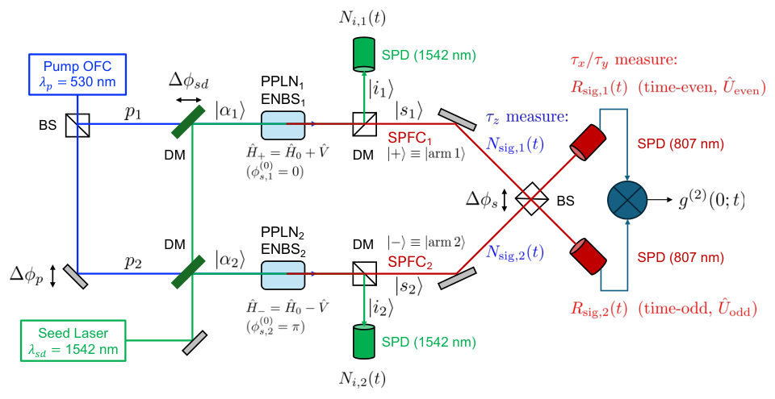
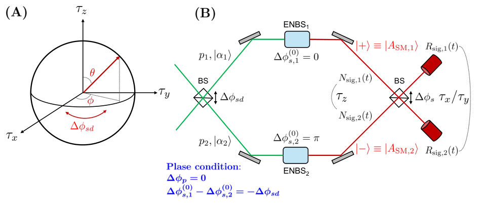

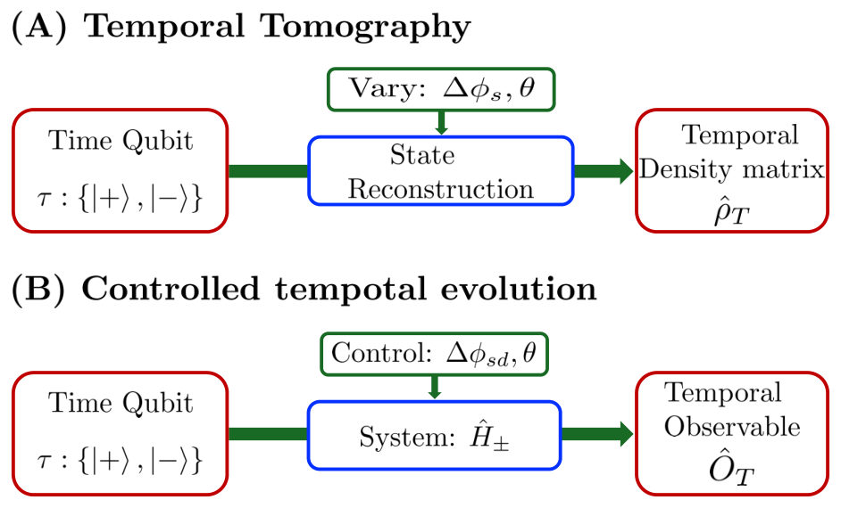
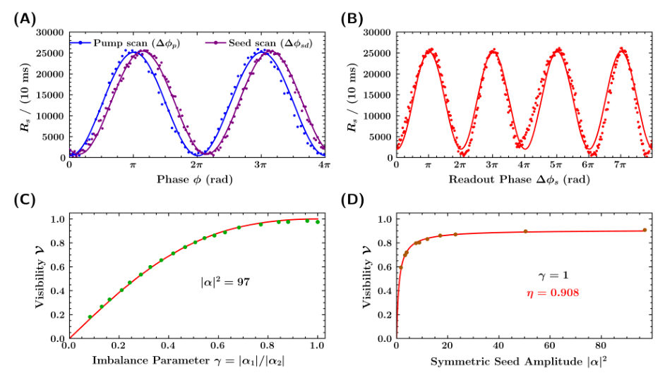
Highlighted author(s): Peter Rabl
Authors: Lucia Valor, Jacquelin Luneau, Klaus Liegener, Stefan Filipp, Peter Rabl
Type: theory · Category: other · PDF: https://arxiv.org/pdf/2610.27070v1
Analysis basis: full PDF text, analyzed in chunks
Topic relevance: 🔥 analog quantum simulation 4/5 · Tavis-Cummings & cavity-many-emitter 2/5
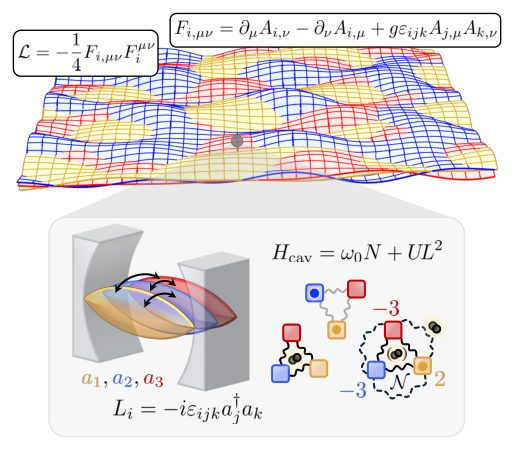
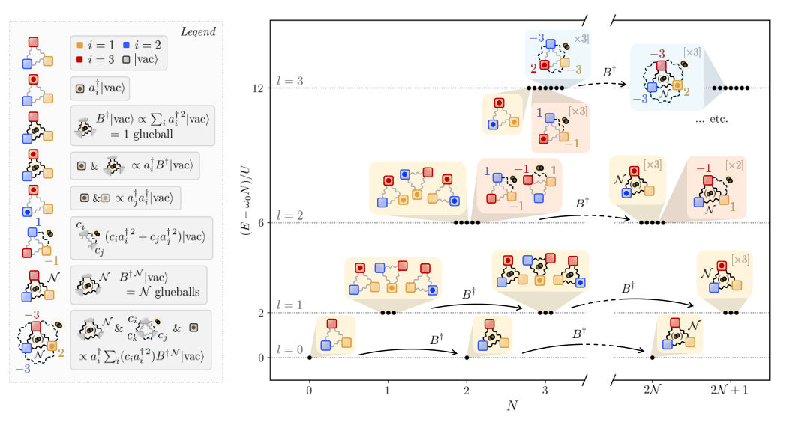
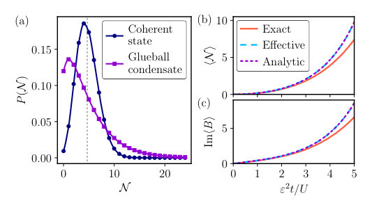
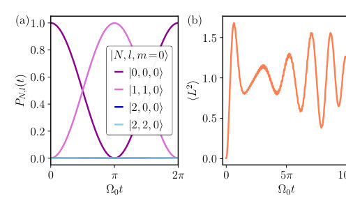
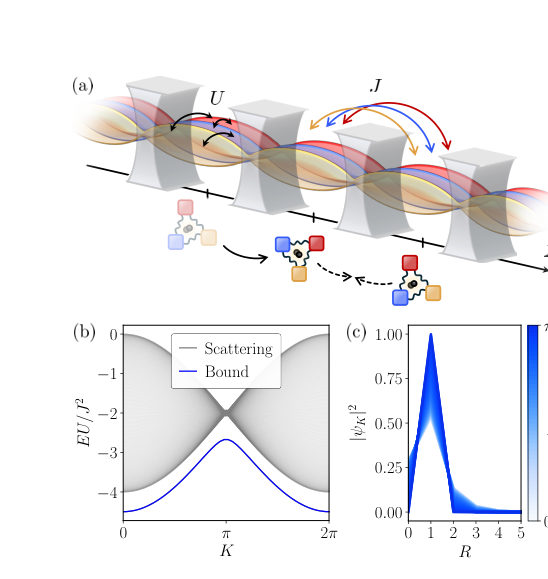
Summary. This paper adapts the powerful framework of cavity quantum electrodynamics to model non-Abelian gauge theories, using SU(2) as the simplest example. By deriving a minimal cavity Hamiltonian, the authors predict the existence of bound composite particles called 'glueballs' within this quantum optical setting. This work is significant because it proposes an experimental route to study fundamental particle physics phenomena using superconducting quantum circuits.
Why it may be interesting. This work directly bridges high-energy particle physics (non-Abelian gauge theories) with the controlled, experimentally accessible physics of cavity QED, suggesting a concrete pathway for quantum simulation.
Main problem. The paper develops a framework to model the dynamics of non-Abelian gauge theories, specifically SU(2), using the established methodology of cavity quantum electrodynamics (Cavity QED).
Main result. The authors derive a minimal cavity SU(2) Hamiltonian involving three coupled bosonic modes, demonstrating that the model predicts novel phenomena like bound composite gauge particles ('glueballs') and condensate formation.
Method. The approach involves quantizing the Yang-Mills Lagrangian in the Coulomb gauge and restricting the dynamics to a single-mode approximation, analogous to cavity QED.
Model / system. The system is the pure-gauge dynamics of SU(2) fields, whose Hamiltonian is derived from the Yang-Mills Lagrangian. It is modeled using a cavity Hamiltonian expressed in terms of three localized bosonic modes, allowing for the application of quantum optics techniques.
Key observables. Bound composite gauge particles ('glueballs'), glueball condensate excitation, and multi-glueball state clustering.
Important parameters / regimes. The coupling constant 'g', the single-mode approximation limit, and the interaction strengths derived from the Yang-Mills structure.
Assumptions / limitations. The primary assumptions include working in the Coulomb gauge, restricting the dynamics to the single-mode limit, and focusing initially on pure-gauge dynamics while neglecting matter fields.
Figures summary. Figure 1 illustrates the gauge fields described by the Yang-Mills Lagrangian, showing the localized mode function representation for the reduced cavity Hamiltonian.
Paper structure. The paper moves from the general Yang-Mills Lagrangian to the Hamiltonian density, applies canonical quantization in the Coulomb gauge, derives the single-mode cavity Hamiltonian, and finally extends the analysis to 1D arrays to study condensate formation.
In quantum optics and related fields, cavity quantum electrodynamics provides a powerful framework for modeling the low-energy properties of bound charges coupled to electromagnetic fields, using a minimal set of atomic levels and isolated photonic modes. Here, we develop a similar framework for non-Abelian gauge theories, focusing on the pure-gauge dynamics of SU(2) fields as the conceptually simplest example. Starting from the corresponding Yang-Mills Lagrangian, we derive an SU(2) cavity Hamiltonian in the Coulomb gauge, represented in terms of only three localized bosonic modes. Unlike its non-interacting electromagnetic counterpart, this model exhibits a nontrivial excitation spectrum featuring bound composite gauge particles ('glueballs') as the lowest-energy configurations. We extend this framework to one-dimensional arrays of coupled SU(2) cavities and discuss the driven excitation of a glueball condensate and the clustering of multi-glueball states as two elementary interaction-induced processes in these models. These examples offer a glimpse into the multitude of novel many-body phenomena that arise within this cavity SU(2) framework and we show how this physics at the interface between particle physics and quantum optics can be experimentally explored using state-of-the-art superconducting quantum circuits.
Authors: Yu-Rong Shu, Shuai Yin
Type: theory · Category: statistical mechanics · PDF: https://arxiv.org/pdf/2610.28365v1
Analysis basis: full PDF text, analyzed in chunks
Topic relevance: 🔥 non-equilibrium universality 5/5 · analog quantum simulation 3/5 · driven-dissipative phase transition 3/5 · Keldysh / 2PI / non-Gaussian methods 2/5 · methods for driven-dissipative 2/5 · scars & prethermalization 1/5
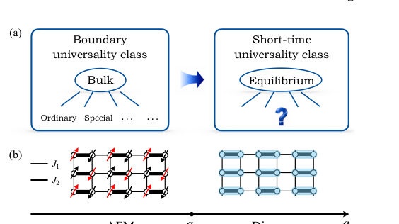
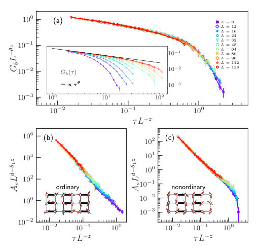
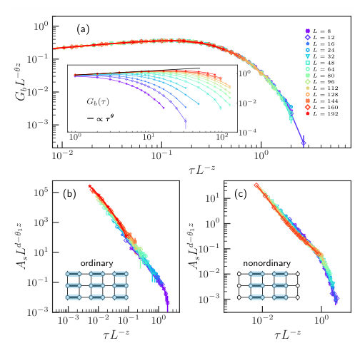
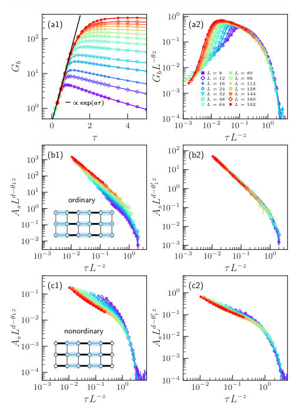
Summary. This work proposes that quantum critical dynamics are not solely defined by the equilibrium phase, but are also dictated by the initial quantum state. By studying the dimerized Heisenberg model, the authors show that different initial preparations lead to distinct dynamical universality classes. This establishes a new, initial-state-controlled classification scheme for quantum criticality.
Why it may be interesting. The finding that initial conditions dictate critical dynamics provides a powerful, non-equilibrium generalization of universality, relevant for understanding quench dynamics or preparation protocols in quantum simulation.
Main problem. The paper introduces and investigates the concept of initial-state-dictated dynamical universality classes in non-equilibrium quantum critical dynamics.
Main result. Distinct initial states (e.g., random-spin vs. dimerized) can lead to drastically different dynamical critical exponents, even when the system belongs to the same equilibrium universality class.
Method. The study uses imaginary-time relaxation dynamics, analyzed via the projector Quantum Monte Carlo (QMC) method and finite-size scaling analysis.
Model / system. The primary model studied is the dimerized Heisenberg model, which undergoes a continuous Quantum Phase Transition (QPT) belonging to the (2+1)D Heisenberg O(3) universality class.
Key observables. Bulk temporal correlation function ($G_b$) and surface autocorrelation function ($A_s$), characterized by critical initial slip exponents ($ heta$ and $ heta_1$).
Important parameters / regimes. The comparison is made across three initial states: random-spin ('classical'), dimerized, and antidimerized ('quantum') paramagnetic states.
Assumptions / limitations. The analysis assumes that the initial state acts as a fundamental determinant of the long-time dynamics, extending the concept of universality beyond equilibrium conditions.
Figures summary. Figures illustrate the phase diagram of the model, and subsequent figures show finite-size scaling collapses for bulk and surface correlation functions for different initial states, highlighting differing exponents.
Paper structure. The paper establishes the framework of dynamical universality, applies it to the dimerized Heisenberg model, and systematically compares the scaling behavior of correlation functions using three distinct initial states, culminating in the discovery of anomalous scaling for one state.
The concept of universality class lies at the core of phase transition physics, with each class uniquely characterized by a dedicated set of critical exponents. Here, we introduce the concept of initial-state-dictated dynamical universality classes in nonequilibrium quantum critical dynamics. By studying the imaginary-time relaxation dynamics of the dimerized Heisenberg model, we demonstrate that distinct kinds of initial states can give rise to different dynamical universality classes within the same equilibrium universality class. Specifically, we find that "classical'' paramagnetic (random-spin) and "quantum'' paramagnetic (dimerized and antidimerized) initial states yield drastically different critical initial slip exponents in the bulk. This initial-state dependence also extends to boundary critical dynamics, where different initial states yield different surface critical initial slip exponents even within the same boundary universality class. Remarkably, for the antidimerized initial state, we uncover an anomalous scaling law violating the conventional relation between the bulk and surface critical initial slip exponents. Our results establish an initial-state-controlled dynamical classification of quantum criticality that extends beyond the conventional equilibrium universality paradigm.
Authors: Long-Jie Li, Li-Li Gao, Zi-Cheng Liu, Zi-Min Li, Murray T. Batchelor
Type: theory · Category: other · PDF: https://arxiv.org/pdf/2610.28412v1
Analysis basis: full PDF text, analyzed in chunks
Topic relevance: 🔥 Dicke superradiance 4/5 · Tavis-Cummings & cavity-many-emitter 3/5 · correlated / nonlocal dissipation 3/5 · superradiant laser 3/5 · analog quantum simulation 2/5 · driven-dissipative phase transition 2/5 · methods for driven-dissipative 2/5 · Keldysh / 2PI / non-Gaussian methods 1/5 · non-equilibrium universality 1/5 · quantum measurements 1/5
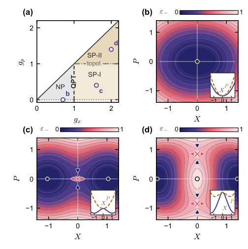
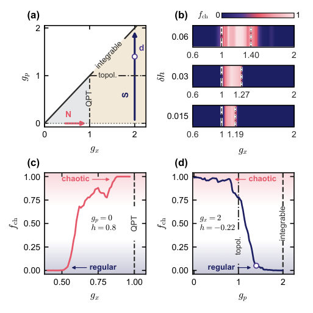
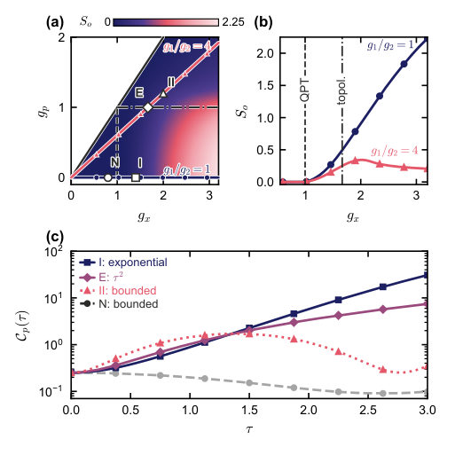
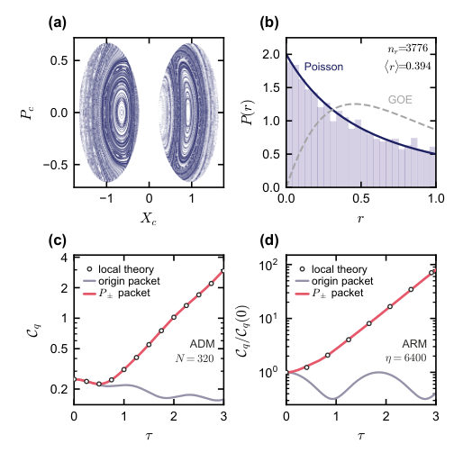
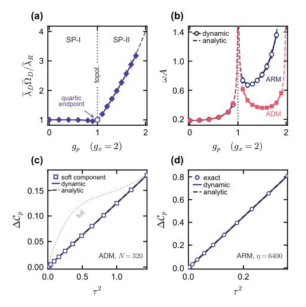
Summary. This paper clarifies the relationship between superradiance and quantum chaos in models like the Dicke model. By introducing the FOTOC, the authors demonstrate that local quantum instability (scrambling) can occur even when the system is classically regular, proving that superradiance is not intrinsically linked to global chaos. This separation is key for understanding quantum dynamics in interacting light-matter systems.
Why it may be interesting. This work provides a crucial theoretical tool (FOTOC) to distinguish between different sources of quantum complexity—local instability versus global chaos—in systems relevant to quantum optics and cavity QED.
Main problem. The paper resolves the long-standing tension regarding the relationship between superradiance, global quantum chaos, and local instability in quantum systems.
Main result. Superradiance is shown to be neither necessary nor sufficient for global quantum chaos, as local instability (scrambling) can occur on classically regular energy shells.
Method. The authors employ a combination of diagnostics: global chaos is measured via Lyapunov exponents, while local stability is probed using the Fidelity Out-of-Time-Order Correlator (FOTOC).
Model / system. The study analyzes the Dicke model and its anisotropic variants (ADM) and the quantum Rabi model (ARM), using a shared Hamiltonian structure.
Key observables. FOTOC growth rates, chaotic fraction ($f_{ch}$), stationary point geometry, and reconstructed spectral singularity amplitudes.
Important parameters / regimes. Coupling strengths ($g_1, g_2$), excitation energy, and the distinction between isotropic and anisotropic regimes.
Assumptions / limitations. The analysis distinguishes between global chaos (energy shell properties) and local instability (stationary point dynamics).
Figures summary. Figures illustrate the stationary-point geometry, showing that local FOTOC growth occurs even when the classical dynamics (Poincaré sections) are regular, separating local instability from global chaos.
Paper structure. The paper systematically contrasts global chaos diagnostics (Lyapunov exponents) with local stability diagnostics (FOTOC) across different parameter regimes of the Dicke model, culminating in a quantitative spectroscopic reconstruction.
Early studies on the Dicke model linked superradiance to quantum chaos, whereas later anisotropic Dicke and Rabi studies reached apparently conflicting conclusions. We resolve this tension by distinguishing global chaos from local instability. Along the isotropic Dicke path, a sweep at fixed low excitation energy crosses both the superradiant boundary and a nearby chaotic window, explaining the reported correlation. However, the anisotropic Dicke model can be chaotic in the normal phase and regular in the superradiant phase, making superradiance neither necessary nor sufficient for global chaos. A fidelity out-of-time-order correlator (FOTOC), in contrast, probes the local stability of the stationary point selected by the initial wave packet. The superradiant transition destabilizes the origin, whereas a change in anisotropy can restore its stability and create displaced saddles. Wave packets centered at these saddles exhibit exponential FOTOC growth even on a classically regular Dicke energy shell with Poisson statistics. This local sensitivity also enables quantitative spectroscopy: combined with the topology of stationary points and local density of states relations, FOTOC dynamics reconstructs the absolute amplitudes of spectral singularities in both models without fitting the density of states.
Authors: Tai Hyun Yoon
Type: both · Category: quantum information and computing · PDF: https://arxiv.org/pdf/2610.27639v1
Analysis basis: full PDF text, analyzed in chunks
Topic relevance: 🔥 quantum optics experiment 4/5 · QC/QI experiment 3/5 · analog quantum simulation 3/5 · interference shaping light 3/5 · driven-dissipative phase transition 2/5 · methods for driven-dissipative 2/5 · quantum measurements 2/5 · Keldysh / 2PI / non-Gaussian methods 1/5 · correlated / nonlocal dissipation 1/5 · non-equilibrium universality 1/5




Summary. This paper proposes and experimentally validates a single-photon time qubit by controlling the Hamiltonian evolution using quantum vacuum effects in an interferometric setup. The key achievements include demonstrating time-reversal symmetry control, achieving universal single-qubit quantum gate operations, and establishing a fundamental complementarity law linking wave and particle descriptions of time evolution.
Why it may be interesting. This work directly addresses fundamental questions at the intersection of quantum foundations (arrow of time) and quantum computation by implementing a novel, controllable quantum resource (the time qubit) using photonic platforms.
Main problem. The central challenge is treating the arrow of time as a controllable quantum variable rather than a fixed external parameter, which requires realizing a physical time qubit.
Main result. The authors demonstrate universal single-qubit SU(2) control over a time qubit using quantum-vacuum control, and establish an exact wave-particle complementarity law for the arrow of time.
Method. The work combines theoretical quantum-optical modeling with experimental validation using phase-resolved single-photon interferometry from coherently seeded entangled nonlinear biphoton sources.
Model / system. The system is a single-photon time qubit realized in a hybrid nonlinear-linear interferometer architecture. The dynamics are governed by a controlled Hamiltonian $\hat{H} \propto \hat{H}_0 \pm \hat{V}$, where $\hat{H}_0$ is the spontaneous squeezing background and $\hat{V}$ is the stimulated displacement generator.
Key observables. Time-parity fringes, Loschmidt time-reversal echo amplitude $L(t)$, and the complementarity law $|r| = V = |\alpha|^2/(1+|\alpha|^2)$.
Important parameters / regimes. The control mechanism relies on a controlled $\pi$ pump–seed phase inversion to flip $\hat{V} o -\hat{V}$.
Assumptions / limitations. The analysis assumes the ability to map local supermodes onto isomorphic target modes to yield the controlled Hamiltonian, and that the ENBS platform provides postselection-free measurement.
Figures summary. Figure 1 illustrates the ENBS interferometer architecture. Figure 2 shows the Temporal Bloch-sphere representation and the interferometric readout. Figure 4 shows open-loop PZT ramp scans of single-photon interference fringes.
Paper structure. The paper first introduces the theoretical framework of the time qubit and its connection to vacuum control. It then details the experimental realization using ENBS interferometry to achieve time reversal and SU(2) control. Finally, it proves the wave-particle complementarity law and discusses scaling to multi-qubit and error-correcting regimes.
Treating the arrow of time as a controllable quantum variable rather than a fixed external parameter is a central challenge in quantum physics. Recently, Bloch~\cite{Bloch2025} proposed the theoretical concept of a \emph{time qubit}, a two-level control space $\mathcal{H}_T=\mathrm{span}\{\ket{+},\ket{-}\}$ that selects between opposite Hamiltonian evolutions $\hat{H}_{\pm}=\hat{H}_0\pm\hat{V}$, but this paradigm has remained experimentally unrealized. Here we formulate the quantum-optical theory of a single-photon time qubit---uncovering quantum-vacuum control and complementarity of the arrow of time---and experimentally probe and validate its predictions using phase-resolved single-photon interferometry from two coherently seeded entangled nonlinear biphoton sources~\cite{Lee2018,Yoon2021}. First, we show theoretically and verify experimentally that a controlled $π$ pump--seed phase inversion during pair creation from the quantum vacuum flips the stimulated displacement generator $\hat{V}\to -\hat{V}$ on top of the spontaneous two-mode squeezing background $\hat{H}_0$, reversing the stimulated evolution time [$\hat{U}_{\mathrm{stim},-}(t)=\hat{U}_{\mathrm{stim},+}(-t)$] and enabling universal single-qubit $\mathrm{SU}(2)$ control and postselection-free first-order tomography on the temporal Bloch sphere. Second, we prove that spontaneous idler vacuum fluctuations record complete which-branch (temporal-direction) information whereas the shared coherent seed erases it without cascading or aligning the idler beams, establishing an exact wave--particle complementarity law $|\bm{r}|=\mathcal{V}=|α|^2/(1+|α|^2)$ for the purity of the arrow of time and enabling direct first-order measurement of the Loschmidt time-reversal echo.
Authors: Haimi Nguyen, David R. Reichman
Type: theory · Category: other · PDF: https://arxiv.org/pdf/2610.27589v1
Analysis basis: full PDF text, analyzed in chunks
Topic relevance: 🔥 Tavis-Cummings & cavity-many-emitter 4/5 · 🔥 driven-dissipative phase transition 4/5 · analog quantum simulation 3/5 · methods for driven-dissipative 3/5 · Keldysh / 2PI / non-Gaussian methods 2/5 · correlated / nonlocal dissipation 2/5 · non-equilibrium universality 2/5 · Dicke superradiance 1/5
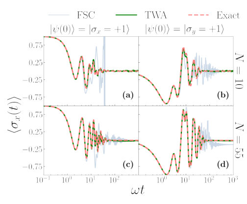
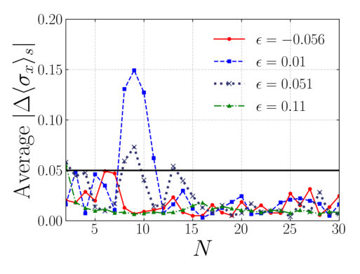
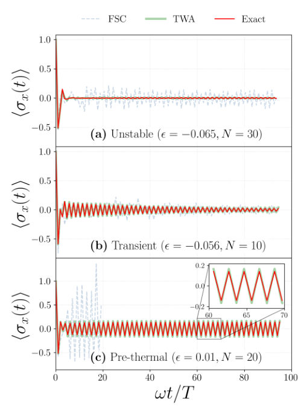
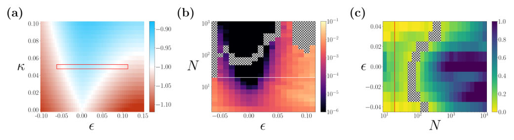
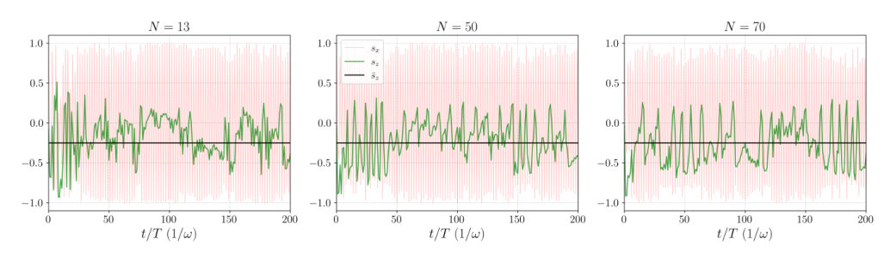
Summary. This paper analyzes the stability of Discrete Time Crystals in finite-size cavity QED systems modeled by the open Dicke model. The authors demonstrate that simple mean-field theories fail to capture the dynamics, showing that non-mean-field fluctuations lead to a non-monotonic decay of the DTC order parameter as the system size changes. They establish the TWA as a superior simulation tool for this complex, open quantum system.
Why it may be interesting. This work provides crucial insights into how finite-size effects and quantum fluctuations modify macroscopic quantum phenomena like DTCs, which is vital for designing realistic quantum experiments using finite atomic ensembles.
Main problem. The paper investigates the stability and decay of Discrete Time Crystal (DTC) behavior in finite-size quantum systems, contrasting these findings with predictions made in the thermodynamic limit.
Main result. Finite-size, non-mean-field fluctuations cause the DTC decay rates to exhibit a non-trivial, non-monotonic dependence on the number of atoms ($N$).
Method. The study employs advanced quantum simulation techniques, comparing the accuracy of the Truncated Wigner Approximation (TWA) against the Second-Order Cumulant Expansion (CE) and exact methods.
Model / system. The system is an open Dicke model describing $N$ two-state atoms coupled to a lossy cavity mode, governed by a Lindblad master equation with periodic driving.
Key observables. DTC order parameter ($\langle\sigma_x angle$), decay rates, amplitudes, and the comparison of stroboscopic attractors across different $N$.
Important parameters / regimes. System size ($N$), cavity loss rate ($\kappa$), driving frequency ($\lambda_0$), and the comparison between mean-field ($N o \infty$) and finite-$N$ regimes.
Assumptions / limitations. The TWA is used as the primary tool for large $N$, while the failure of the cumulant expansions (FSC/PSC) due to Gaussian assumptions is a key limitation noted.
Figures summary. Figures compare $\langle\sigma_x(t) angle$ dynamics across different methods (exact, TWA, FSC) for varying $N$, and show phase space analysis revealing non-monotonic scaling of DTC stability with $N$.
Paper structure. The paper progresses by first establishing the model and comparing simulation methods (TWA vs. CE). It then analyzes the three dynamical regimes (unstable, transient, pre-thermal DTC) and culminates in a detailed analysis of how finite-size effects cause non-monotonic scaling of the DTC order parameter.
It has been shown that Discrete Time Crystal (DTC) behavior may arise in the periodically driven, open Dicke model in the thermodynamic limit ($N \rightarrow \infty$). In this work, we demonstrate that finite $N$ non-mean-field fluctuations in this model can lead to decay rates and amplitudes of transient DTCs that display a non-trivial non-monotonic behavior with an increasing number of atoms. We show that the second-order cumulant expansion fails to capture the finite-size dynamics, while a stochastic version of the Truncated Wigner Approximation (TWA) is remarkably accurate, particularly in the large atom ensemble limit. Using the TWA and the Monte Carlo Wave Function (MCWF) approach, we identify three distinct dynamical regimes of transient DTC behavior in the finite-size Dicke model. We outline the mechanism behind the non-monotonic finite size dynamical decay of DTC order and discuss the implications for experiments performed on finite-sized atomic assemblies.
Authors: Shao-Fan He, Lv-Ting Gong, Fu-Quan Dou
Type: theory · Category: statistical mechanics · PDF: https://arxiv.org/pdf/2610.28373v1
Analysis basis: full PDF text, analyzed in chunks
Topic relevance: 🔥 driven-dissipative phase transition 4/5 · Dicke superradiance 3/5 · Tavis-Cummings & cavity-many-emitter 3/5 · methods for driven-dissipative 3/5 · non-equilibrium universality 3/5 · Keldysh / 2PI / non-Gaussian methods 1/5 · analog quantum simulation 1/5 · correlated / nonlocal dissipation 1/5 · quantum measurements 1/5
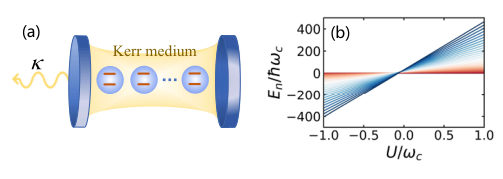
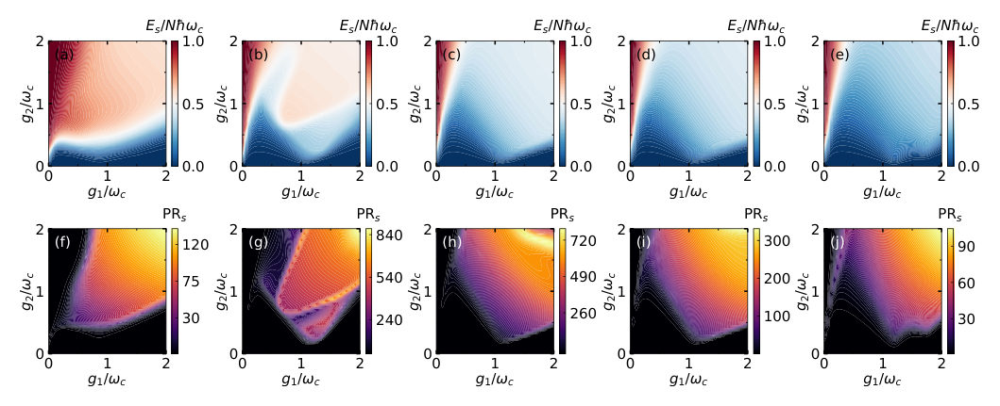
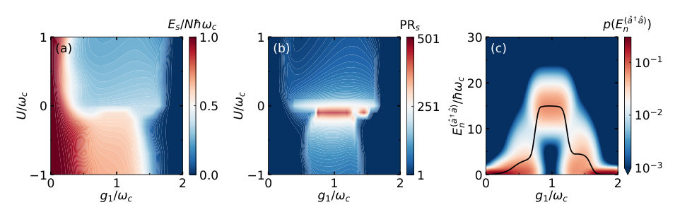
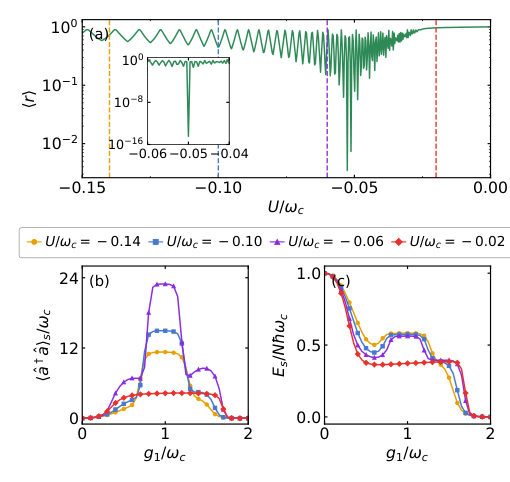
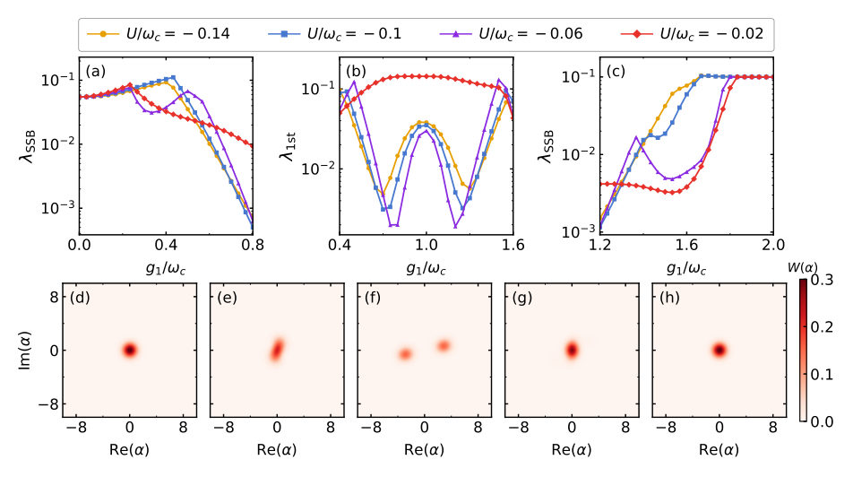
Summary. This paper explores how phase transitions in an anisotropic Dicke quantum battery, modified by Kerr nonlinearity, dictate its energy storage capacity. By analyzing the system's steady-state dynamics using tools like Liouvillian theory and $ ext{PR}_s$, the authors show that optimal charging protocols can be achieved by exploiting the underlying ergodic and nonergodic phase transitions. This provides a pathway for engineering quantum battery performance based on fundamental quantum dynamics.
Why it may be interesting. This work directly bridges quantum optics (Dicke model, Kerr nonlinearity) with non-equilibrium statistical mechanics (PTs, steady states) to solve a practical problem in quantum technology (QB optimization).
Main problem. The study investigates how quantum phase transitions (PTs) can be utilized to manipulate and optimize the charging performance of a quantum battery (QB) system.
Main result. The stable stored energy is found to be governed by different physical mechanisms—Ergodic-Nonergodic Transitions (ENET) or Dissipative Phase Transitions (DPTs)—depending on the Kerr nonlinearity strength.
Method. The analysis employs Liouvillian spectral theory to quantify critical slowing down near DPTs, uses the Wigner function to characterize field properties, and optimizes charging protocols via Reinforcement Learning (RL).
Model / system. The system is an anisotropic Dicke quantum battery coupled to a single-mode Kerr cavity, described by a Hamiltonian involving cavity, battery, and interaction terms, and evolving under a Lindblad master equation.
Key observables. Stable stored energy ($E_s$), Participation Ratio ($ ext{PR}_s$), Average Level Spacing Ratio ($\langle r angle$), and the mean photon number $\langle \hat{a}^\dagger \hat{a} angle_s$.
Important parameters / regimes. Kerr nonlinearity strength ($U$), coupling strengths ($g_1, g_2$), and the system's anisotropy.
Assumptions / limitations. The analysis assumes the system dynamics can be effectively described by the Lindblad master equation and focuses on steady-state properties ($ ho_s$).
Figures summary. Figures illustrate the cavity spectrum dependence on Kerr nonlinearity, and plots show the correlation between stored energy ($E_s$) and localization ($ ext{PR}_s$) across different coupling regimes.
Paper structure. The paper first introduces the model and the role of PTs, then analyzes the steady-state properties using spectral theory and diagnostics like $ ext{PR}_s$, and finally uses RL to optimize the charging process based on these phase dynamics.
Phase transitions (PTs) in quantum many-body systems offer a powerful route to manipulate the performance of quantum batteries (QBs). Here, we investigate an anisotropic Dicke QB with Kerr nonlinearity, focusing on the role of PTs in the charging process of the QB system. By analyzing how the Kerr nonlinearity reshapes the cavity level-spacing structure, we find that multiple near-degeneracies emerge at specific nonlinearity strengths. Away from the region of multiple near-degeneracies, the stable stored energy is governed primarily by the ergodic-nonergodic transition (ENET), whereas within this region it is controlled by first- and second-order dissipative phase transitions (DPTs). We employ Liouvillian spectral theory to quantify the critical slowing down associated with the DPTs, and use the Wigner function to characterize the properties of the cavity field in the vicinity of criticality. We optimize the charging process via reinforcement learning (RL) and reveal the physical mechanism underlying performance enhancement from the perspective of ergodic and nonergodic phase dynamics. Our results offer a feasible pathway for manipulating and optimizing quantum battery performance based on intrinsic PT behaviors.
Authors: Jiong Li, Li-Wei Duan, Qing-Hu Chen, Hai-Qing Lin
Type: theory · Category: other · PDF: https://arxiv.org/pdf/2610.27780v1
Analysis basis: full PDF text, analyzed in chunks
Topic relevance: 🔥 Tavis-Cummings & cavity-many-emitter 4/5 · Dicke superradiance 3/5 · analog quantum simulation 3/5 · driven-dissipative phase transition 2/5 · non-equilibrium universality 2/5 · Keldysh / 2PI / non-Gaussian methods 1/5 · correlated / nonlocal dissipation 1/5 · methods for driven-dissipative 1/5 · superradiant laser 1/5
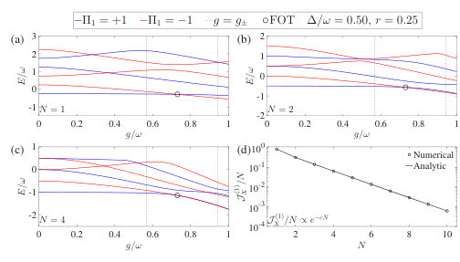
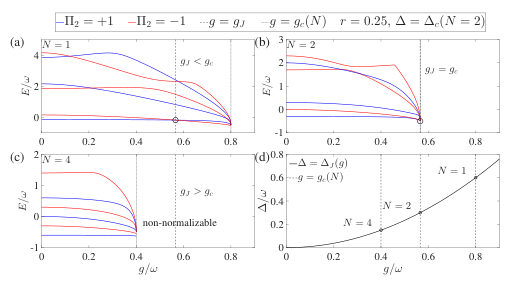
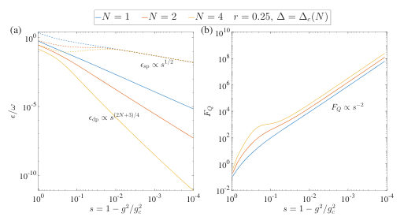
Summary. This theoretical paper investigates how first-order quantum phase transitions behave at finite particle numbers in Dicke-type models. It distinguishes between two fates: asymptotic suppression (one-photon) and termination at a finite-coupling boundary due to spectral collapse (two-photon). The key finding is that even when the transition terminates, a distinct, measurable collective spectral signature persists.
Why it may be interesting. This work provides a detailed, quantitative comparison of how different physical mechanisms (thermodynamic vs. finite-size effects) govern the disappearance or modification of quantum critical points, which is highly relevant for understanding quantum phase transitions in cavity QED or superconducting circuits.
Main problem. The paper compares the physical fates of exact first-order quantum phase transitions (FOTs) occurring at finite particle number ($N$) in anisotropic Dicke models, contrasting asymptotic suppression with termination due to spectral collapse.
Main result. In the one-photon case, the FOT cusp strength vanishes asymptotically, while in the two-photon case, the FOT terminates at a finite-coupling boundary, leaving a distinct, $N$-dependent collective spectral signature.
Method. The analysis uses Juddian solutions to characterize the crossing points and employs perturbation theory, scaling arguments, and gap analysis near the critical/collapse endpoints.
Model / system. The study focuses on anisotropic Dicke Models (ADMs) in one-photon and two-photon regimes, involving coupling to a single bosonic mode and exhibiting symmetry-protected ground-state crossings.
Key observables. FOT cusp strength ($J^{(k)}_X$), different-parity gap ($\epsilon_{dp}$), same-parity soft-mode gap ($\epsilon_{sp}$), and Quantum Fisher Information ($F_Q$).
Important parameters / regimes. Finite particle number $N$, coupling constants ($g_J$), and the spectral collapse boundary defined by $g_c$.
Assumptions / limitations. The analysis assumes the existence of exact Juddian ground-state doublets for arbitrary finite $N$ and relies on specific scaling estimates for various quantum overlaps and gaps.
Figures summary. Figures illustrate low-energy spectra showing the FOT crossing relative to instability thresholds, and plot the scaling of parity-resolved gaps ($\epsilon_{dp}$ vs $\epsilon_{sp}$) and QFI near the collapse endpoint.
Paper structure. The paper establishes the common structure of the crossing via the coupling matrix determinant, then analyzes the distinct bosonic responses in the one-photon (asymptotic suppression) and two-photon (spectral collapse) models, culminating in a detailed comparison of gap scaling exponents.
Symmetry-protected ground-state crossings can produce exact first-order transitions (FOTs) even at finite $N$, in contrast to continuous transitions governed by soft-mode criticality. We establish exact Juddian ground-state crossings for arbitrary finite $N$ in the one- and two-photon anisotropic Dicke models and identify a common two-channel structure: the eigenvalues of the coupling matrix set the local normal-state instability thresholds, whereas its determinant fixes the exact crossing. Despite this common structure, the resulting FOTs have distinct fates determined by the bosonic response. In the one-photon model, the overlap between coherent Juddian branches vanishes in the thermodynamic or infinite frequency-ratio limits, asymptotically suppressing the FOT cusp. In the two-photon model, squeezed Juddian states lose normalizability at spectral collapse, thereby terminating the physical FOT line at finite $N$. Although the cusp strength tends to zero as the endpoint is approached, the terminating FOT retains a collective spectral signature: the different-parity gap is predicted to close with an $N$-dependent exponent $μ_N=(2N+3)/4$, one greater than the cusp termination exponent. By contrast, the same-parity soft mode retains $N$-independent square-root scaling and governs the critical response. Thus spectral collapse can terminate an exact finite-$N$ FOT while preserving its collective imprint in the parity-resolved spectrum.
Authors: Zachary Giles, Dvira Segal
Type: theory · Category: other · PDF: https://arxiv.org/pdf/2610.28358v1
Analysis basis: full PDF text, analyzed in chunks
Topic relevance: 🔥 methods for driven-dissipative 4/5 · correlated / nonlocal dissipation 3/5 · driven-dissipative phase transition 3/5 · Keldysh / 2PI / non-Gaussian methods 2/5 · non-equilibrium universality 2/5 · Tavis-Cummings & cavity-many-emitter 1/5 · analog quantum simulation 1/5 · quantum measurements 1/5
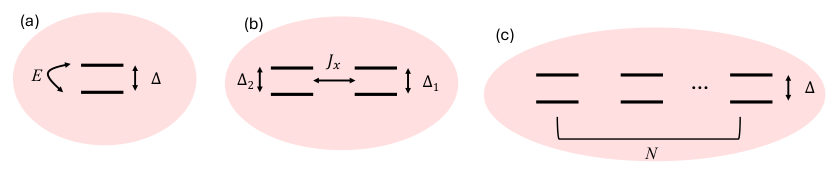
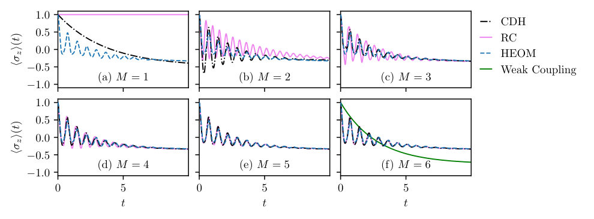
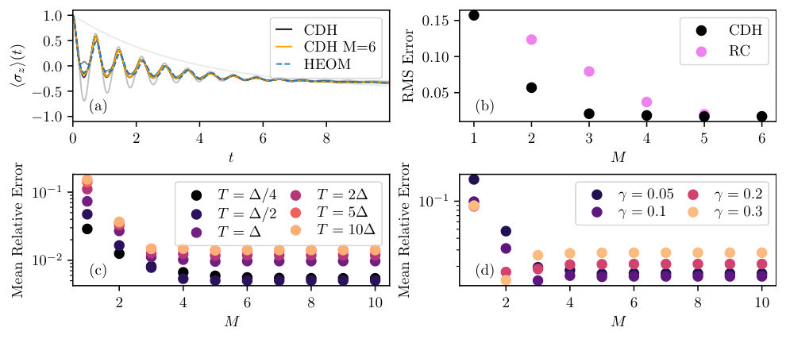
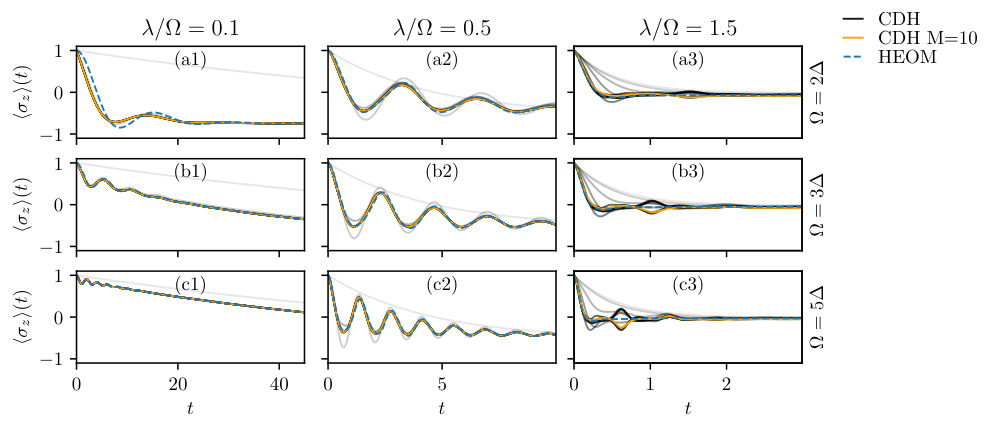
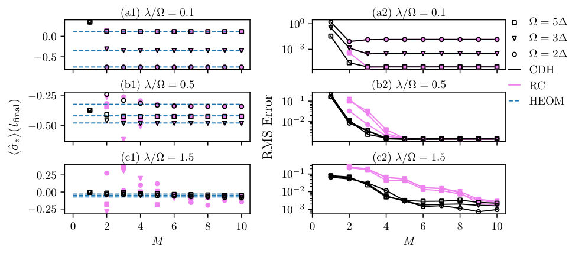
Summary. This work introduces the Compact Dressed Hamiltonian (CDH) framework to accurately simulate open quantum systems strongly coupled to structured baths. By combining reaction-coordinate mapping and polaron transformations, it achieves a compact representation that accurately captures complex dynamics, including spectral properties and relaxation rates. This method offers a significant computational advantage over traditional techniques while maintaining physical fidelity across broad coupling regimes.
Why it may be interesting. This is highly relevant as it provides a powerful, systematic, and computationally efficient tool for simulating non-Markovian dynamics in strongly coupled quantum systems, bridging the gap between simple weak-coupling approximations and computationally intractable exact methods.
Main problem. The paper addresses the challenge of simulating the dynamics of open quantum systems that are strongly coupled to structured bosonic environments.
Main result. The Compact Dressed Hamiltonian (CDH) framework provides an efficient and physically accurate method to capture these dynamics using a compact Hilbert space representation.
Method. The method combines reaction-coordinate mapping with a polaron transformation to dress the Hamiltonian, allowing the use of a weak-coupling Markovian master equation on the residual environment.
Model / system. The framework is benchmarked on spin-boson-type models, including single spins, coupled spins, and spin ensembles, applicable across weak to strong coupling regimes.
Key observables. Oscillation frequencies, relaxation behavior, long-time populations, and the spectrum/eigenmodes of the Liouvillian.
Important parameters / regimes. Resonant and off-resonant coupling regimes, and the degree of bosonic bath coupling.
Assumptions / limitations. The method assumes the bath is harmonic and the system couples bilinearly to the bath; it involves truncating the collective bosonic mode.
Figures summary. Figure 1 illustrates the various spin-boson models studied (single spin, coupled spins, spin ensembles). Figures 15 and 16 show the calculated eigenvalues and eigenmodes of the Redfield superoperator for the spin-boson model.
Paper structure. The paper develops the CDH framework by first mapping the system to a reaction-coordinate Hamiltonian, then applying the polaron transformation and truncation to create the CDH representation, and finally benchmarking the resulting dynamics using the Redfield master equation solver.
We advance the compact dressed Hamiltonian (CDH) framework to simulate the dynamics of open quantum systems strongly coupled to structured bosonic environments. The CDH approach combines reaction-coordinate mapping with a polaron transformation, incorporating strong system-environment hybridization into a dressed representation before truncating the collective bosonic mode. As a result of this truncation, dynamical features are captured with substantially fewer states than in the original representation. The residual environment is treated using a weak-coupling Markovian quantum master equation. We benchmark the method for spin-boson-type models including a single spin, coupled spins, and spin ensembles, considering both resonant and off-resonant regimes and weak to strong system-bath coupling. Comparisons with hierarchical equations of motion and converged reaction-coordinate calculations demonstrate that the CDH representation systematically approaches the reference dynamics with a compact Hilbert space, accurately reproducing oscillation frequencies, relaxation behavior, and long-time populations over a broad parameter regime. The method further captures cooperative phenomena, including bath-mediated interactions, synchronization between spins, and signatures for collective emission. Beyond efficient time propagation, the CDH framework provides direct access to the spectrum and eigenmodes of the Liouvillian. We demonstrate that slow dynamical modes converge rapidly in the CDH representation, enabling identification of relaxation timescales without fitting time-dependent observables. As a whole, the CDH framework provides an efficient and physical description of strongly coupled open quantum-system dynamics.
Authors: Conrad Silio, Cristian Staii
Type: theory · Category: other · PDF: https://arxiv.org/pdf/2610.27167v1
Analysis basis: full PDF text, analyzed in chunks
Topic relevance: 🔥 methods for driven-dissipative 4/5 · Keldysh / 2PI / non-Gaussian methods 3/5 · driven-dissipative phase transition 3/5 · correlated / nonlocal dissipation 2/5 · non-equilibrium universality 2/5 · quantum measurements 2/5 · analog quantum simulation 1/5
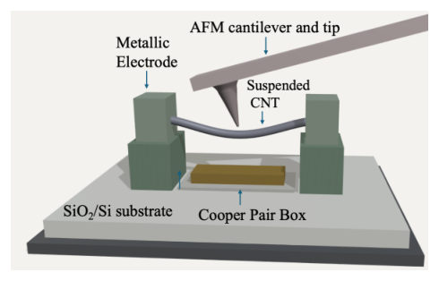
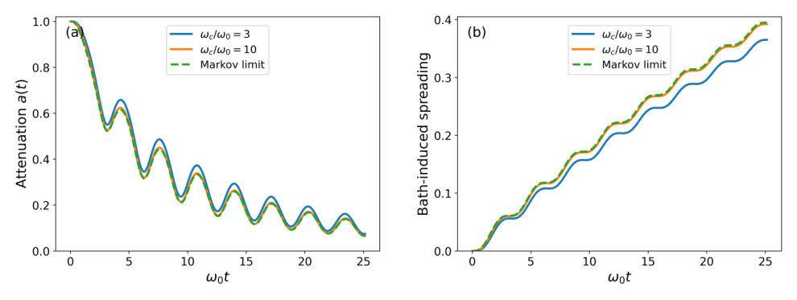
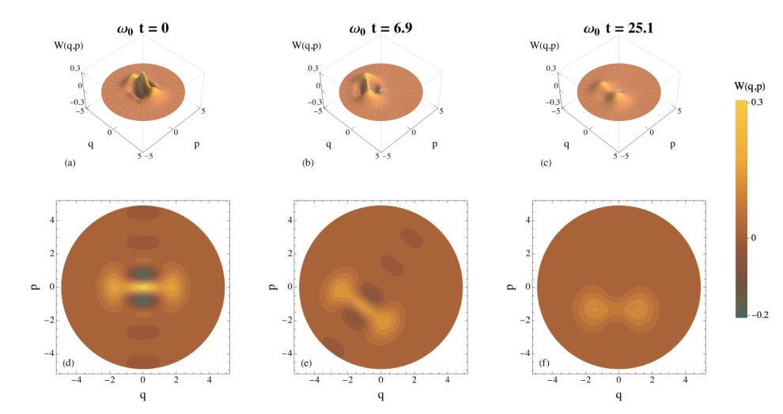
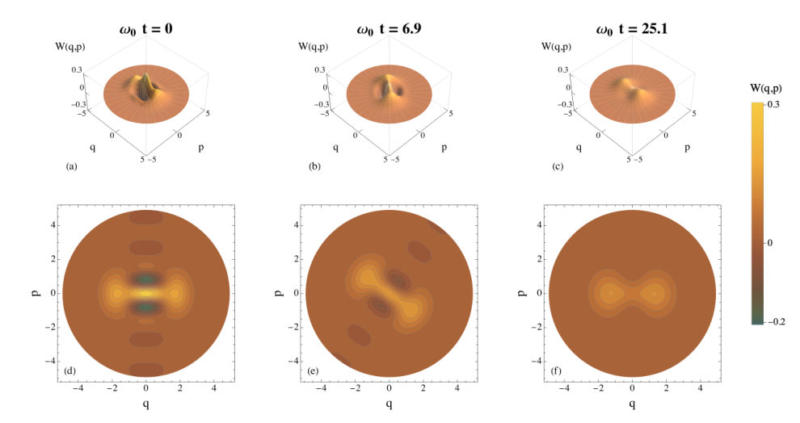
Summary. This paper develops an advanced analytical framework to model the quantum dynamics of a carbon nanotube oscillator driven by an AFM while interacting with a thermal environment. By working in the Wigner phase space, the authors derive explicit, pole-based solutions for the system's evolution, allowing for the precise quantification of decoherence and nonclassical quantum effects in finite-memory environments.
Why it may be interesting. This work provides a highly rigorous, analytical tool for open quantum systems, directly applicable to mesoscopic quantum devices like CNTs, bridging quantum optics, quantum thermodynamics, and condensed matter physics.
Main problem. The paper develops an explicit analytical framework to describe the finite-time phase space evolution of a quantum oscillator subject to dissipation and external driving forces.
Main result. It provides a tractable, pole-based method to calculate the Wigner function dynamics and covariance matrix for quantum Brownian motion with structured environmental memory, avoiding complex double-time integrations.
Method. The dynamics are formulated in phase space using the Wigner function, starting from the generalized Langevin equation and employing a pole-based construction to analytically solve the reduced dynamics.
Model / system. The system is a harmonic quantum Brownian oscillator modeled by a suspended carbon nanotube (CNT) driven by an Atomic Force Microscope (AFM). The coupling to the thermal environment is treated using a generalized Langevin approach.
Key observables. Wigner function, integrated negative part of the Wigner function (nonclassicality measure), finite-time covariance matrix, and thermal frequency series representation.
Important parameters / regimes. Finite environmental memory (Drude kernel), zero-point fluctuations, low-temperature regimes, and the ratio $k_B T / \hbar\omega_0$.
Assumptions / limitations. The analysis is restricted to the harmonic oscillator limit, and the initial state is assumed to be factorized ($ ho_{ ext{tot}}(0) = ho_{ ext{S}}(0) \otimes ho_{ ext{th}}^{ ext{B}}$).
Figures summary. Figure 1 schematically illustrates the CNT setup actuated by an AFM tip, operable at low temperatures, enabling Wigner function tomography.
Paper structure. The paper builds the theory by first establishing the quantum Langevin equation and the Wigner representation. It then develops the pole-based construction to analytically solve the dynamics, culminating in explicit formulas for the covariance matrix and coherence loss.
Suspended carbon nanotubes provide a useful platform for studying controlled nanomechanical motion in regimes where environmental fluctuations, memory effects, and quantum coherence can all influence the dynamics. We model the fundamental flexural mode of a carbon nanotube driven by an atomic force microscope as a harmonic quantum Brownian oscillator subject to a prescribed classical force and coupled linearly to a thermal environment. Starting from the generalized Langevin equation, we formulate the reduced dynamics directly in phase space, where the Wigner function evolves through a Gaussian propagator determined by dissipative linear transport, a deterministic force-induced displacement, and bath-induced fluctuations. For a Drude memory kernel, the retarded response is expressed through the three roots of a characteristic cubic equation. In the classical-noise limit, the three independent entries of the finite-time covariance matrix reduce to explicit finite sums over these response poles, eliminating numerical double-time covariance integration. We extend the construction to the full quantum fluctuation spectrum, obtaining a thermal frequency series representation that retains zero-point and low-temperature fluctuations. For an initial two-packet superposition, we examine interference attenuation and the integrated negative part of the Wigner function, which provides a phase space measure of nonclassicality. These results provide an explicit analytical framework for finite-memory quantum Brownian motion of bound oscillators and a tractable phase space description of driven carbon nanotube dynamics relevant to future quantum state preparation and quantum tomography experiments.
Authors: Samuel A. Engel, Dewei Gong, Ziguang Lin, Lysander Christakis, Kang-Kuen Ni, Norman Y. Yao
Type: both · Category: other · PDF: https://arxiv.org/pdf/2610.27053v1
Analysis basis: full PDF text, analyzed in chunks
Topic relevance: 🔥 analog quantum simulation 4/5 · QC/QI experiment 3/5 · interference shaping light 3/5 · methods for driven-dissipative 2/5 · quantum measurements 2/5 · Rydberg arrays 1/5 · quantum optics experiment 1/5
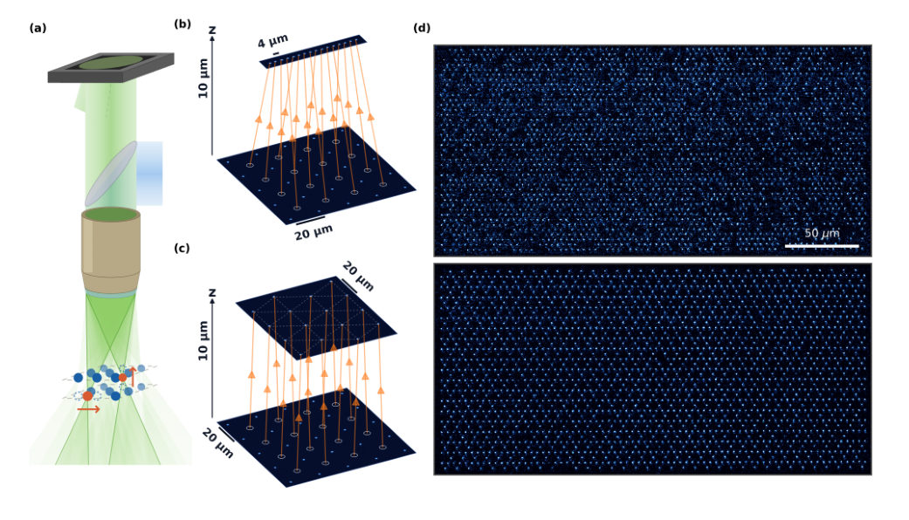
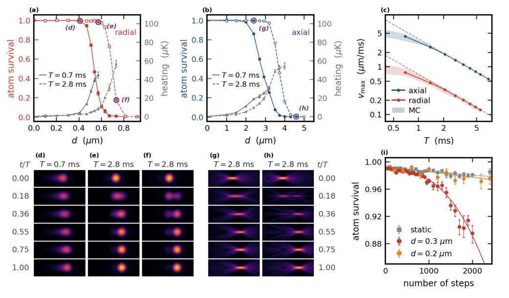
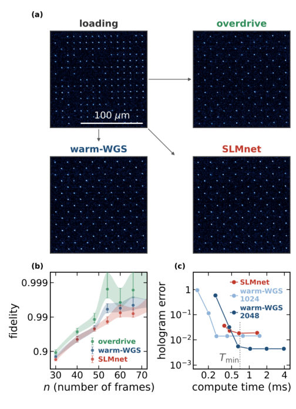
Summary. This paper presents a method to rapidly and precisely reconfigure arrays of neutral atoms trapped by optical tweezers using dynamic holograms generated by SLMs. By developing a fast, training-free algorithm and exploiting the physics of the liquid crystal response, the authors achieved significantly faster transport and demonstrated programmable, large-scale 3D atom assembly.
Why it may be interesting. This work directly addresses the engineering bottleneck in quantum simulation platforms: controlling the physical hardware (SLMs) fast enough to realize the theoretical potential of quantum state manipulation in cold atom arrays.
Main problem. The central challenge is achieving fast, parallel, and omnidirectional rearrangement of individual neutral atoms trapped in optical tweezer arrays.
Main result. The authors demonstrated significantly faster atom transport by updating the holographic fields faster than the liquid crystal can settle, and achieved high-fidelity assembly of large lattices in 3D.
Method. They developed and implemented a warm-start, weighted Gerchberg-Saxton (WGS) algorithm for real-time hologram generation, combined with advanced control protocols like 'overdrive' to accelerate the system response.
Model / system. The system uses neutral atoms (e.g., Ytterbium) trapped in optical tweezer arrays generated by Liquid-Crystal Spatial Light Modulators (SLMs). The control involves dynamically shaping the light field via holograms to guide atomic movement.
Key observables. Atom survival fraction, heating rate, mean filling fraction (e.g., 99.0%), and maximum transport speed ($v_{ ext{max}}$).
Important parameters / regimes. SLM update rate (kilohertz), liquid crystal settle time ($ au_0$), step size ($d$), and transport period ($T$).
Assumptions / limitations. The performance relies on the ability to rapidly update the holographic phase profile and the assumption that the WGS algorithm can accurately model the required light field.
Figures summary. Figures illustrate the setup, the assembly of large kagome lattices, and comparative plots showing atom loss/heating rates under different update frequencies ($T > au_0$ vs. $T < au_0$).
Paper structure. The paper progresses from establishing the need for fast transport, detailing the WGS algorithm for real-time control, demonstrating speed enhancements by beating the LC settling time, and culminating in showing programmable 3D rearrangement capabilities.
The ability to assemble and reconfigure individual atoms is central to performing quantum science using optical tweezer arrays. Here, we demonstrate parallel omnidirectional atom transport and rearrangement using dynamic holograms generated by a single kilohertz-rate spatial light modulator. By carefully characterizing survival and heating, we show that atoms remain confined even when successive holograms are commanded before the liquid crystal has settled, enabling significantly faster transport. To generate holograms in real time, we develop and implement a warm-start, weighted Gerchberg-Saxton algorithm that achieves performance comparable to neural-network methods without requiring any training. Combining these techniques, we assemble ytterbium atoms into a 2078-site kagome lattice with 99.0% mean filling. In addition, we demonstrate parallel transport between array layers, combining axial and transverse motion to reconfigure atoms in three dimensions. Our approach is readily adaptable to existing tweezer platforms and provides a method for large-scale SLM-based atom assembly as well as programmable three-dimensional control.
Authors: K. Fabitha, T. Runggaldier, A. Winkler, F. Bernecker, J. Bate, M. Canteri, J. Helgert, T. E. Northup, V. Krutyanskiy, B. P. Lanyon
Type: experiment · Category: quantum information and computing · PDF: https://arxiv.org/pdf/2610.27854v1
Analysis basis: full PDF text, analyzed in chunks
Topic relevance: 🔥 QC/QI experiment 4/5 · quantum optics experiment 3/5 · analog quantum simulation 2/5 · quantum measurements 2/5 · Tavis-Cummings & cavity-many-emitter 1/5 · interference shaping light 1/5
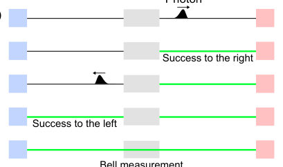
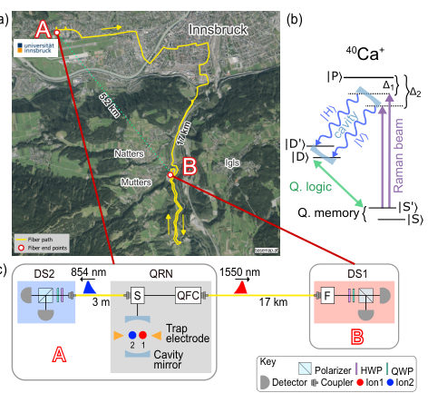
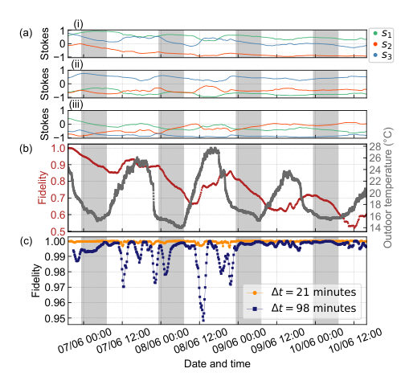
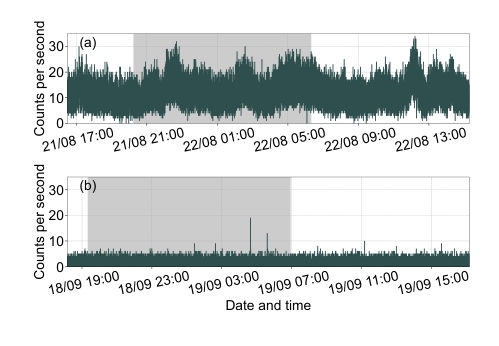
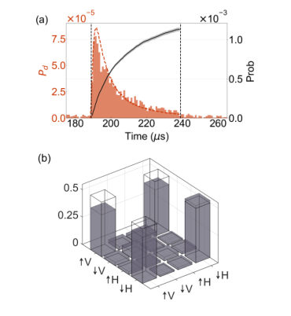
Summary. This paper reports the successful demonstration of a trapped-ion quantum repeater node operating across a 17 km metropolitan fiber, moving quantum networking beyond controlled lab settings. The system uses trapped ions to generate and swap entanglement between local and remote photons, achieving a high Bell-state fidelity. This work validates the feasibility of using trapped-ion technology for building city-scale quantum internet infrastructure.
Why it may be interesting. This work provides a crucial experimental blueprint for scaling quantum networking from lab benches to real-world infrastructure by tackling fiber-specific challenges like polarization drift and long-haul transmission.
Main problem. The primary challenge addressed is the efficient distribution of entanglement over long distances required for future quantum communication networks.
Main result. The authors successfully demonstrated a trapped-ion repeater node operating over a 17 km metropolitan fiber, achieving a Bell-state fidelity of 81.6% between local and remote photons.
Method. The protocol involves establishing entanglement using a trapped-ion node that couples local atomic qubits to photons distributed across the fiber, followed by Bell-state measurements.
Model / system. The system utilizes trapped ${}^{40} ext{Ca}^+$ ions coupled to an optical cavity, which acts as the repeater node. The setup integrates on-demand photon generation, atomic memory storage, and quantum frequency conversion (QFC) to match telecom wavelengths.
Key observables. Bell-state fidelity (81.6% $\pm$ error bars), process fidelity of polarization dynamics, and entanglement distribution rates.
Important parameters / regimes. 17 km metropolitan fiber length, 854 nm to 1550 nm wavelength conversion, and coherence times derived from fiber stability measurements.
Assumptions / limitations. The analysis relies on characterizing and mitigating environmental noise sources, including polarization drift and magnetic field fluctuations, to maintain high fidelity.
Figures summary. Figures illustrate the quantum repeater node concept, the overall network setup context (including satellite imagery), and polarization dynamics measurements showing process fidelity over time.
Paper structure. The paper proceeds by characterizing the deployed fiber channel, investigating ion-photon entanglement, detailing the repeater-node protocol implementation, and concluding with the results demonstrating city-scale operation.
Concatenation of quantum repeater nodes has been proposed as a means to distribute entanglement efficiently across future long-distance networks. Here, we demonstrate a trapped-ion repeater node that establishes photonic entanglement over a 17 km fiber traversing a city, moving beyond laboratory-only prototypes. The node comprises two atomic ions coupled to an optical cavity. First, a detailed characterization is performed of the long fiber channel and of ion-photon entanglement distributed across it. Next, a repeater-node protocol is implemented, achieving entanglement between a local photon and a remote photon with a Bell-state fidelity of $81.6^{+1.9}_{-1.4}\%$. These results demonstrate that trapped-ion repeater-node technology can operate over existing city-scale fiber infrastructure and represent a step toward distributed quantum repeater networks.
Authors: Andrew J. Ochoa, Martin J. A. Schuetz, Helmut G. Katzgraber
Type: both · Category: other · PDF: https://arxiv.org/pdf/2610.28528v1
Analysis basis: full PDF text, analyzed in chunks
Topic relevance: 🔥 Rydberg arrays 4/5 · analog quantum simulation 3/5 · quantum measurements 3/5 · QC/QI experiment 2/5
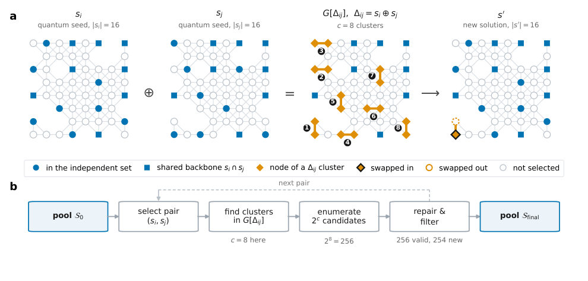
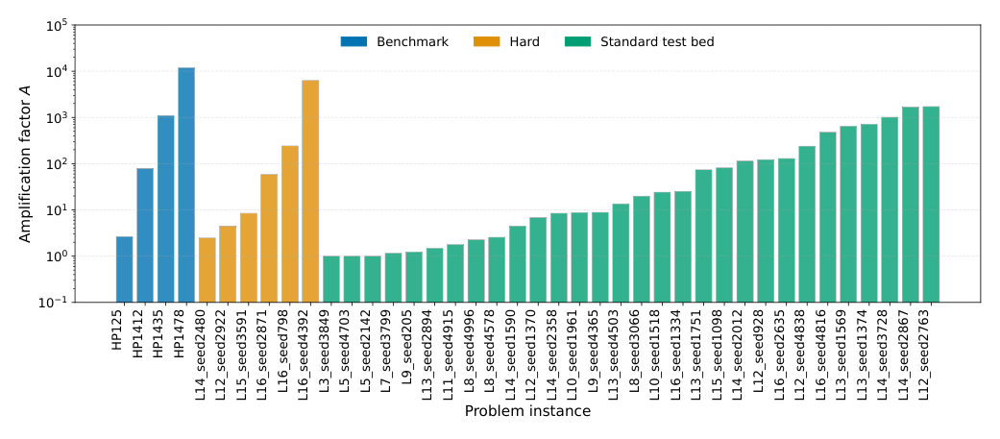

Summary. This paper presents a hybrid method to enhance quantum optimization results for problems like MIS using Rydberg atom arrays. It combines initial solutions from quantum hardware with a classical post-processing technique called Houdayer cluster updates. This classical step dramatically increases the discovered solution diversity and can even find better solutions than the quantum hardware alone.
Why it may be interesting. This work directly bridges quantum hardware limitations (sampling bias) with classical algorithmic power, showing a concrete method to extract far more information from quantum measurements than the raw output suggests, which is highly relevant for interpreting quantum simulation results.
Main problem. The core problem is exploring and systematically amplifying the ground-state manifold of NP-hard combinatorial optimization problems, such as Maximum Independent Set (MIS).
Main result. The hybrid quantum-classical approach achieved diversity amplification factors up to 11923x and recovered a median of 21% of the true ground-state manifold for tested instances.
Method. A hybrid approach where quantum hardware provides initial solution seeds, which are then systematically expanded using a classical post-processing algorithm based on Houdayer cluster updates.
Model / system. The physical platform utilized is Rydberg atom arrays, specifically demonstrated on QuEra's Aquila analog annealing device, encoding the MIS problem on unit disk graphs.
Key observables. Solution Diversity Amplification Factor, Recovered Fraction of the Ground-State Manifold, and the size of the discovered independent set compared to the quantum hardware output.
Important parameters / regimes. The problem instances are drawn from a test bed of 43 instances, and the key mechanism relies on the structure of connected components (clusters) within the symmetric difference of two solutions.
Assumptions / limitations. The method is fundamentally non-ergodic and cannot guarantee complete manifold coverage, and the quantum hardware is assumed to suffer from inherent sampling limitations.
Figures summary. Figures illustrate the Houdayer cluster update mechanism, detailing how exchanging entire connected components between two solutions generates multiple distinct candidates, and show the overall algorithm flow.
Paper structure. The paper introduces the MIS problem on Rydberg arrays, details the quantum sampling limitations, and then systematically applies the Houdayer cluster update algorithm in a classical post-processing step to expand the solution space, validating the results on multiple benchmark instances.
We demonstrate a hybrid quantum-classical approach for exploring ground-state manifolds of maximum independent set problems, in which quantum hardware supplies the initial solutions and an entirely classical post-processing algorithm expands them, increasing the solution diversity of quantum hardware measurements by up to several orders of magnitude. Quantum optimization devices, while capable of generating high-quality solutions, can suffer from fundamental sampling limitations. This is particularly problematic for applications that strongly depend on a large variety of uncorrelated optimal solutions. We apply the Houdayer cluster update algorithm to systematically expand quantum-generated solution sets through classical post-processing. We validate our approach on a test bed of 43 problem instances from QuEra's Aquila analog annealing device, achieving diversity amplification factors, defined as the increase in the number of distinct solutions at a given set size, of up to 11923x with a median of 24.3x across different problem scales and hardness parameters. Because exact ground-state degeneracies are known for these instances, the recovered fraction of the manifold can be measured rather than bounded: post-processing recovers a median of 21% of the ground-state manifold, and provably all of it for six instances. We also demonstrate that, in some cases, the classical post-processing can discover independent sets larger than those found by the quantum hardware, thus improving on solution quality and not just diversity. While the method is non-ergodic and cannot guarantee complete manifold coverage, it consistently discovers a larger number of high-quality, and in some cases strictly better, configurations than quantum sampling alone. This work demonstrates how simple classical post-processing can enhance the utility of quantum optimization results.
Authors: Chulwoo Ahn, Vladimir Manucharyan
Type: both · Category: quantum information and computing · PDF: https://arxiv.org/pdf/2610.27743v1
Analysis basis: full PDF text, analyzed in chunks
Topic relevance: 🔥 QC/QI experiment 4/5 · quantum measurements 3/5 · quantum optics experiment 3/5 · Keldysh / 2PI / non-Gaussian methods 1/5 · driven-dissipative phase transition 1/5
Summary. This paper reports on a high-performance, multimode parametric amplifier designed for reading out superconducting qubits in the K-band. By utilizing nondegenerate three-wave-mixing in an array of SNAILs, the authors achieved 20 dB of gain with low added noise. The combination of experimental validation and advanced theoretical modeling provides a practical quantum measurement tool.
Why it may be interesting. This work directly addresses the quantum measurement interface for superconducting qubits, which is a core topic in quantum computing. The detailed modeling of nonlinear effects and noise characterization is highly relevant to open quantum systems theory.
Main problem. The primary goal is to develop a practical, state-of-the-art readout amplifier for superconducting qubits operating in the K-band (19.6–25.6 GHz).
Main result. The authors successfully demonstrated high-gain (20 dB), low-added-noise (0.73 quanta), and broadband parametric amplification in the K-band using a multimode resonator.
Method. The work combines experimental measurements of gain and noise with theoretical modeling using both a two-mode Nondegenerate Parametric Amplifier (NDPA) model and a multimode Kerr model.
Model / system. The physical platform is a multimode resonator built from an array of 500 Superconducting Nonlinear Asymmetric Inductive Elements (SNAILs). The amplification relies on nondegenerate three-wave-mixing ($\omega_p \simeq \omega_s + \omega_i$).
Key observables. Gain (20 dB), 3-dB bandwidth (2.6 to 11.7 MHz), input-referred 1-dB compression power (-100.9 dBm), and average added noise (0.73 quanta).
Important parameters / regimes. K-band frequencies (19.6–25.6 GHz), pump frequencies below 32.2 GHz, and the quantum limit for added noise (1/2 quantum).
Assumptions / limitations. The Kerr-limited model employs the stiff-pump approximation, and the perturbative calculation for dispersive shifts is limited to self- and two-mode virtual processes.
Figures summary. Figures compare measured gain traces to the two-mode NDPA fit, show the input-referred 1-dB compression power versus signal frequency compared to Kerr-limited calculations, and characterize added noise versus inverse gain.
Paper structure. The paper progresses from establishing the physical system and the need for nondegenerate mixing, to detailing the Hamiltonian and modeling approach (NDPA and Kerr models), and finally presenting the quantitative measurements of gain, bandwidth, and noise performance.
We demonstrate K-band nondegenerate three-wave-mixing amplification in a multimode resonator comprising an array of 500 SNAILs. Pairing K-band signal modes with lower-frequency internal idler modes enables 20 dB of gain continuously from 19.6 to 25.6 GHz with pump frequencies below 32.2 GHz. At 20 dB gain, the 3-dB bandwidth ranges from 2.6 to 11.7 MHz, and the input-referred 1-dB compression power reaches -100.9 dBm. In the 20-22 GHz band, the average added noise is 0.73 quanta. A two-mode nondegenerate parametric amplification model describes the measured gain response and gain-bandwidth behavior, while a multimode Kerr model captures the overall compression scale. Our amplifier provides a practical solution for implementing a state-of-the-art readout of superconducting qubits in the K-band.
Authors: Qingfeng Wang, Christopher G. Yale, Edward C. Tortorici, Brian K. McFarland, Daniel Lobser, Melissa C. Revelle, Andrew J. Landahl, Susan M. Clark, Peter J. Love
Type: both · Category: other · PDF: https://arxiv.org/pdf/2610.28453v1
Analysis basis: full PDF text, analyzed in chunks
Topic relevance: 🔥 analog quantum simulation 4/5 · QC/QI experiment 3/5 · quantum measurements 3/5 · Keldysh / 2PI / non-Gaussian methods 1/5 · methods for driven-dissipative 1/5
Summary. The authors demonstrate a method to simulate the static Yukawa model, a coupled fermion-boson system, on a trapped-ion quantum computer. They overcome the limitation of low bosonic occupancy readout by using a Renormalization Group procedure to map the physics onto effective particles. This allows for the study of strongly coupled, high-occupancy regimes previously unreachable by direct measurement.
Why it may be interesting. This work is highly relevant as it pushes the boundaries of quantum simulation by providing a systematic theoretical and experimental pathway to overcome hardware limitations (readout range) when simulating complex, strongly interacting many-body physics.
Main problem. The paper addresses the challenge of simulating strongly coupled fermion-boson systems, specifically the static Yukawa model, in regimes of high bosonic occupancy that are experimentally inaccessible due to current quantum simulator readout limitations.
Main result. By employing the Renormalization Group Procedure for Effective Particles (RGPEP), the authors successfully map the physics of high-occupancy regimes onto measurable low-occupancy measurements on a trapped-ion quantum simulator.
Method. The core methodology involves using similarity renormalization transformations to define effective Hamiltonians ($H_s$) that allow the time evolution of the system to be simulated by measuring observables related to the bare Hamiltonian ($H$) in the experimentally accessible parameter space.
Model / system. The system is the static Yukawa model, a coupled fermion-boson system, simulated on the QSCOUT trapped-ion quantum simulator. The dynamics are governed by Hamiltonians involving bosonic and fermionic operators, and the simulation utilizes qubit-boson interactions.
Key observables. Average bosonic occupation number ($\langle N angle_H$), probability of finding the probe qubit in $|1 angle$ ($P_{|1 angle}( heta)$), and the renormalization parameter $s$.
Important parameters / regimes. The renormalization parameter $s$, the coupling constant $g$, and the time $t$. Key limits include the $s o \infty$ limit corresponding to the physical ground state.
Assumptions / limitations. The analysis assumes that the RGPEP correctly maps the physics, and the measurement process relies on fitting the measured probability $P_{|1 angle}( heta)$ to extract the underlying bosonic Fock distribution $\{p_n\}$.
Figures summary. Figures illustrate the unitary rotation between bare and effective Hamiltonians, show the time evolution of the average occupation $\langle N angle_H$ across different $s$ values, and detail the fitting procedure used to extract the bosonic distribution from measurement angles.
Paper structure. The paper first introduces the physical problem and the RGPEP framework, detailing the Hamiltonian transformation. It then describes the experimental implementation on the trapped-ion platform, focusing on the measurement protocols (AJC interaction, fitting $P_{|1 angle}( heta)$). Finally, it presents the theoretical derivations and experimental results demonstrating the recovery of high-occupancy physics.
Trapped-ion, neutral-atom, and circuit QED quantum computers naturally enable coupled qubit-boson simulations. Boson-fermion interactions arise in quantum field theory, where renormalization is required to obtain finite results. We study one of the simplest examples of a coupled fermion-boson system, the static Yukawa model, on the QSCOUT trapped-ion system. We use similarity renormalization to express the same physics in terms of effective particles described by different values of the renormalization parameter $s$. This enables us to map data taken in the window of bosonic occupancy that is experimentally accessible to larger occupancies of distinct effective particles. We use this to study strongly coupled, high-occupancy regimes despite limited readout ranges. Using a trapped-ion qubit-boson device on Sandia National Laboratories' QSCOUT platform, we demonstrate the time evolution of the static Yukawa model.
Authors: Dmitrii Akatev, Jakub Lewandowski, Maria Chekhova
Type: experiment · Category: quantum information and computing · PDF: https://arxiv.org/pdf/2610.28020v1
Analysis basis: full PDF text, analyzed in chunks
Topic relevance: 🔥 quantum optics experiment 4/5 · QC/QI experiment 3/5 · interference shaping light 3/5 · quantum measurements 1/5
Summary. This work experimentally shows that using thin-film nonlinear crystals enhances the orbital-angular-momentum (OAM) spectrum generated via SPDC compared to bulk crystals. Crucially, the thin film achieves a decoupling between the OAM spectrum and the photon frequency, enabling the creation of high-purity, high-dimensional entangled quantum states.
Why it may be interesting. The demonstration of spatial-spectral decoupling in a solid-state source is highly relevant for developing scalable, high-dimensional quantum light sources for quantum communication and computation.
Main problem. The paper aims to demonstrate and exploit enhanced orbital-angular-momentum (OAM) dimensionality and the decoupling of spatial and spectral entanglement in spontaneous parametric down-conversion (SPDC).
Main result. Thin-film SPDC sources generate photon pairs with a substantially broader OAM spectrum compared to bulk crystals, exhibiting near spatial-spectral decoupling, which is crucial for high-dimensional quantum state generation.
Method. The study uses quantum-state tomography in selected OAM subspaces and compares OAM spectra measured via the phase-flattening technique between thin-film and bulk crystal sources.
Model / system. The experiment compares photon pair generation in a thin-film lithium niobate (LN) film against a bulk periodically poled lithium niobate (PPLN) crystal, utilizing the thin-film approximation where the thickness is much smaller than the coherence length.
Key observables. Azimuthal Schmidt number ($K_{az}$), OAM spectrum width, state purity ($P$), and state fidelity ($F$).
Important parameters / regimes. Thin-film thickness ($\sim 7 \mu ext{m}$), bulk crystal thickness ($\sim 500 \mu ext{m}$), and the comparison under identical pump conditions.
Assumptions / limitations. The thin-film approximation ($L \ll L_{coh}$) is key, and the comparison relies on identical pump conditions.
Figures summary. Figures compare the transverse-momentum amplitude (TPA) and joint OAM spectra between thin-film and bulk sources, demonstrating the superior OAM bandwidth of the thin film.
Paper structure. The paper establishes the theoretical basis for thin-film SPDC, presents experimental measurements comparing OAM spectra and TPA against bulk sources, and concludes with quantum state tomography results confirming high-purity, high-dimensional entanglement.
Thin-film spontaneous parametric down-conversion, due to the relaxed phase-matching condition, generates photon pairs that are extremely broadband in frequency and angle and highly entangled in time/frequency and position/momentum. Here we show that it also provides a very broad orbital angular momentum (OAM) spectrum, which, in contrast to the case of bulk crystals, is decoupled from the frequency spectrum. To demonstrate it experimentally, we generate photon pairs in a $7~μ\mathrm{m}$-thick lithium niobate film and compare them with those from a $500~μ\mathrm{m}$-thick periodically poled lithium niobate crystal under identical pump conditions. The thin-film source exhibits a substantially broader OAM spectrum, with the azimuthal Schmidt number almost 9 times larger than that of the bulk source. On this highly entangled state, we perform quantum-state tomography in selected two- and four-dimensional OAM subspaces, demonstrating high-purity maximally entangled states. These results highlight thin nonlinear films as a promising platform for high-dimensional quantum-state generation with weak spatial--spectral coupling.
Authors: Lawrence M. Qin, Sky Semone, Matthew J. Brandsema, Christos Argyropoulos
Type: theory · Category: quantum information and computing · PDF: https://arxiv.org/pdf/2610.27226v1
Analysis basis: full PDF text, analyzed in chunks
Topic relevance: 🔥 interference shaping light 4/5 · analog quantum simulation 2/5 · correlated / nonlocal dissipation 1/5 · driven-dissipative phase transition 1/5 · methods for driven-dissipative 1/5
Summary. This paper presents a novel composite plasmonic metasurface designed to act as a tunable, non-unitary beamsplitter for controlling optical quantum interference. By combining plasmonic gratings with nanocavities, the device can switch between bosonic bunching and fermionic anti-bunching states purely by tuning the incident photon frequency. This offers a highly integrated platform for fundamental quantum optics research and applied quantum computing components.
Why it may be interesting. This work directly addresses the engineering of quantum optical elements, providing a solid platform for realizing quantum logic gates and non-classical light sources essential for quantum computing and communications.
Main problem. The challenge is to efficiently control optical quantum interference using a single, integrated device for quantum information processing applications.
Main result. The authors demonstrate a composite plasmonic metasurface that can tune quantum interference between bosonic bunching and fermionic anti-bunching simply by varying the incident photon frequency, eliminating the need for external bias.
Method. The analysis uses the quantum coalescence metric to quantify photon-photon interactions, modeling the metasurface as a non-unitary beamsplitter.
Model / system. The physical system is a composite quantum plasmonic metasurface combining a plasmonic grating (for Extraordinary Optical Transmission) with top nanostripes forming nanocavities. The theory analyzes the system using input/output annihilation operators and the quantum coalescence metric.
Key observables. Quantum coalescence metric (C), bosonic bunching ($C=0$), fermionic anti-bunching ($C=2$), Reflection (R), Transmittance (T), and Absorption (A) coefficients.
Important parameters / regimes. Incident photon frequency, grating geometry (nanoslit width, thickness), and the phase shift ($ heta_{rt}$) between incident photons.
Assumptions / limitations. The analysis assumes the device can be modeled as a general, spatially asymmetric but reciprocal beamsplitter, and later incorporates nonlocal electromagnetic effects via the hydrodynamic Drude model.
Figures summary. Figures illustrate the schematic of the metasurface showing tunable quantum interference, the quantum probability distributions for bunching/anti-bunching, and spectral plots showing the coalescence response versus frequency.
Paper structure. The paper progresses from defining the problem of tunable quantum interference, detailing the composite metasurface structure, deriving the quantum coalescence metric, demonstrating the tuning capability via frequency variation, and finally analyzing the impact of nonlocal electromagnetic effects on the resonance.
The ability to efficiently control optical quantum interference by the same device is a challenging task that promises to enable key operations in quantum information processing. Here, we tackle this problem by presenting a composite quantum plasmonic metasurface operating as an ultrathin non-unitary beamsplitter capable of achieving both single photon bosonic bunching and fermionic anti-bunching interference just by varying the incident photons frequency or changing the design dimensions. The presented metasurface combines a plasmonic grating corrugated by periodic nanoslits that can achieve extraordinary optical transmission with additional nanostripes on top forming nanocavities characterized by localized gap plasmon resonances. The photon-photon interactions are analyzed based on calculating the quantum coalescence metric which accurately portrays the obtained bunching or anti-bunching quantum interference. The presented quantum interference operation is applicable to both fundamental non-classical light interactions and in the design of more applied quantum optical logic gates used in quantum computing and communications.
Authors: Guanxi Xun, Weiguang Cao, Haruki Watanabe
Type: theory · Category: statistical mechanics · PDF: https://arxiv.org/pdf/2610.27939v1
Analysis basis: full PDF text, analyzed in chunks
Topic relevance: 🔥 analog quantum simulation 4/5 · Keldysh / 2PI / non-Gaussian methods 1/5 · driven-dissipative phase transition 1/5 · methods for driven-dissipative 1/5 · non-equilibrium universality 1/5 · quantum measurements 1/5
Summary. This work rigorously determines the conditions under which classical $\mathbb Z_2$ lattice gauge models maintain local quantum-channel stability when subjected to weak local perturbations. By analyzing the system's behavior across different temperature regimes using geometric and algebraic invariants, the authors provide a powerful diagnostic tool ($\mathcal F_m$) to distinguish between different physical phases. This advances the understanding of quantum information preservation in strongly interacting lattice systems.
Why it may be interesting. The rigorous mathematical framework connecting local quantum operations (quantum channels) to the physical properties (phase stability) of lattice gauge theories is highly relevant for understanding quantum simulation fidelity.
Main problem. The paper establishes sufficient conditions for two-way local quantum-channel stability in classical $\mathbb Z_2$ lattice gauge models.
Main result. For certain ranges of lattice dimensions and sufficiently weak local perturbations at low temperatures, the system's state remains equivalent to the canonical flat ensemble, and a diagnostic covariance $F_m$ distinguishes low- and high-temperature regimes.
Method. The proof combines analyzing locally indistinguishable flat sectors with extended magnetic defects, utilizing concepts from quantum channel theory and trace norm analysis.
Model / system. The system is a classical $\mathbb Z_2$ lattice gauge model defined on a $d$-dimensional lattice, involving spins on $m$-dimensional cells. The model includes the Ising model ($m=0$) and the magnetic sector of the toric code ($m=1$).
Key observables. Optimized covariance $\mathcal F_m$ between distant neighborhoods of parallel $m$-tori, and the trace distance $\epsilon$ between states.
Important parameters / regimes. The stability holds for $1 \le m \le d-2$ and requires sufficiently weak local classical perturbations at low positive temperature.
Assumptions / limitations. The analysis is performed on the full spin Hilbert space without enforcing the Gauss-law constraint, and the results do not determine the full phase diagram.
Figures summary. Not specified.
Paper structure. The paper develops stability theorems by analyzing the relationship between the perturbed Gibbs state and the canonical flat ensemble, using diagnostics like the covariance $\mathcal F_m$ to characterize the phase.
We establish sufficient conditions for two-way local quantum-channel stability in classical $\mathbb Z_2$ lattice gauge models with spins on $m$-dimensional cells of a $d$-dimensional lattice. Each interaction multiplies the spins on the boundary of an $(m+1)$-cell. This family, defined on the full spin Hilbert space without a Gauss-law constraint, includes the Ising model at $m=0$ and the magnetic sector of the toric code at $m=1$. The low-temperature proof combines two ingredients: locally indistinguishable flat sectors and extended magnetic defects of dimension $d-m-1$. For $1\le m\le d-2$, sufficiently weak local classical perturbations at sufficiently low positive temperature preserve equivalence to the canonical flat ensemble. No internal or gauge symmetry is required of the perturbation. For weak noncommuting perturbations, we prove the same conclusion in a smaller sufficient window by reducing the diagonal probabilities to a weak classical interaction and recovering the coherences with a local channel. The conversion channels use product ancillary inputs, have polylogarithmic causal radius, and achieve any prescribed inverse-power whole-system trace-norm error. Sufficiently high-temperature states are instead two-way equivalent to a product state. Independent finite-dimensional onsite systems can be included with weak local couplings. An optimized covariance between two distant neighborhoods of parallel $m$-tori is nonincreasing under one-way local conversion and invariant under two-way conversion. Its values $\mathcal F_m=1$ and $0$ distinguish the proved low- and high-temperature domains without a protecting symmetry. These sufficient domains do not determine the full phase diagram.
Authors: Chunyang Ding, Chuyao Tong, Paul Varosy, Nikitha Jain, Ziyi Zhao, Eric I. Rosenthal, Konrad W. Lehnert, David I. Schuster
Type: experiment · Category: quantum information and computing · PDF: https://arxiv.org/pdf/2610.27137v1
Analysis basis: full PDF text, analyzed in chunks
Topic relevance: 🔥 QC/QI experiment 4/5 · quantum measurements 3/5 · quantum optics experiment 1/5
Summary. This paper presents a tunable inductive bridge (TIB) as a compact, chip-scale replacement for traditional, bulky microwave isolators in superconducting quantum circuits. By demonstrating that the TIB can be pulsed to isolate the qubit during free evolution, the authors show it effectively suppresses thermal noise backaction from readout amplifiers by over 30 dB, paving the way for more scalable quantum processors.
Why it may be interesting. The work directly addresses hardware limitations in quantum computing by proposing a compact, tunable, and high-performance component to solve a critical noise mitigation problem in superconducting circuits.
Main problem. The primary challenge is achieving fast, high-fidelity readout for scalable superconducting quantum computation while mitigating thermal noise backaction from necessary cryogenic amplifiers.
Main result. The tunable inductive bridge (TIB) successfully functions as a chip-scale, integrated replacement for bulky ferrite isolators, suppressing noise-induced qubit dephasing by over 30 dB without degrading qubit coherence.
Method. The authors characterized the TIB by flux-pulsing it to transmit only during readout, and quantified noise suppression by injecting broadband thermal noise and measuring resulting qubit dephasing ($T_2^E$).
Model / system. The experiment uses a fixed-frequency transmon qubit coupled to a readout resonator, with the TIB integrated into the readout chain. The system is analyzed by measuring coherence times and residual photon populations under pulsed vs. static operation.
Key observables. Readout fidelity (up to 99.82% pulsed), noise suppression ( $>30$ dB), qubit coherence times ($T_1, T_{2E}$), and residual excited-state population ($p_e$).
Important parameters / regimes. On/Off ratio (25–40 dB), noise suppression factor ($>30$ dB), and minimum detectable temperature ($\geq 84$ mK).
Assumptions / limitations. The TIB's pulsed operation does not introduce measurable backaction thermal photons, and the injected noise spectrum serves as a good proxy for ambient thermal noise.
Figures summary. Figures characterize the TIB's transmission properties (on/off ratio, time response) and demonstrate noise suppression by comparing qubit echo oscillations ($T_2^E$) with and without injected noise.
Paper structure. The paper first introduces the need for integrated isolators, then details the TIB's characterization (transmission, pulsing), followed by rigorous noise injection experiments to quantify noise suppression, and finally confirms coherence preservation across operational modes.
Scalable superconducting quantum computation requires fast, high-fidelity readout. Currently, this is assisted through cryogenic amplification of the readout signal. In traditional dispersive readout schemes, the amplifiers that are used to provide high signal-to-noise ratio also generate thermal noise that can decohere the qubits, demanding additional ferrite-based isolators to suppress this noise. Here, we integrate a chip-scale microwave switch, the tunable inductive bridge, into the readout chain of a fixed-frequency transmon. Flux-pulsing the switch, such that it transmits only during the readout, did not make a discernable difference to qubit coherence, residual excited-state population, or readout fidelity metrics. By injecting broadband noise that mimics amplifier thermal photons, we show that the switch suppresses the resulting qubit dephasing by more than $30$~dB, consistent with its independently measured on-off ratio, establishing it as a potential chip-based integrated replacement for readout-chain isolators.
Authors: Hikaru Shimizu, Arisa Ohno, Mao Miyasugi, Yumeno Seki, Naoyuki Funaoka, Yukari Takada, Aruto Hosaka, Shun Fujii, Hiroyuki Tsuda, Masahiro Takeoka
Type: experiment · Category: quantum information and computing · PDF: https://arxiv.org/pdf/2610.27540v1
Analysis basis: full PDF text, analyzed in chunks
Topic relevance: 🔥 quantum optics experiment 4/5 · QC/QI experiment 3/5 · interference shaping light 1/5
Summary. This paper experimentally proves that Hollow-Core Fiber (HCF) is a superior transmission medium for quantum networks compared to standard Single-Mode Fiber (SMF). By demonstrating that HCF suppresses nonlinear crosstalk noise by two orders of magnitude, it allows for the reliable co-propagation of high-fidelity quantum entanglement alongside high-capacity classical DWDM signals.
Why it may be interesting. This work directly addresses a critical engineering bottleneck in quantum networking—the interaction between high-power classical infrastructure and fragile quantum signals—providing crucial empirical data for the deployment of quantum repeaters and quantum internet links.
Main problem. The primary challenge is enabling the coexistence of quantum entanglement signals and high-power classical data signals in optical fibers without suffering from nonlinear crosstalk.
Main result. The study experimentally demonstrates that Hollow-Core Fiber (HCF) significantly suppresses background nonlinear noise compared to standard Single-Mode Fiber (SMF), thereby preserving high-fidelity entanglement distribution even when co-propagating with dense Wavelength-Division Multiplexing (DWDM) classical signals.
Method. The authors performed direct experimental comparisons between HCF and SMF using polarization-entangled photons alongside high-power DWDM classical signals, measuring entanglement fidelity and background noise.
Model / system. The experiment compares two physical platforms: standard Single-Mode Fiber (SMF) and Photonic-Bandgap-based Hollow-Core Fiber (HCF). The system involves transmitting polarization-entangled states ($\Psi^+$) alongside classical signals across multiple DWDM channels.
Key observables. Entanglement Fidelity ($F$), background noise count rates, and the degree of nonlinear crosstalk.
Important parameters / regimes. Total classical launch power of 11.2 dBm; the noise suppression factor (approximately two orders of magnitude improvement in HCF over SMF).
Assumptions / limitations. The advantage of HCF is attributed to its intrinsically low optical nonlinearity, which is confirmed even after correcting for simple transmission loss differences.
Figures summary. Figures illustrate the setup showing co-propagation, the optical spectrum confirming nonlinear processes (FWM, Raman scattering), and a direct comparison of background noise count rates between HCF and SMF as a function of classical power.
Paper structure. The paper establishes the need for coexisting quantum/classical light, presents the experimental setup comparing HCF and SMF, measures noise and fidelity under high classical power, and concludes that HCF is superior for maintaining quantum signal integrity.
Coexistence of classical and quantum light in optical fiber is a key requirement for scalable quantum networks. However, it is fundamentally limited by nonlinear crosstalk from intense classical signals. Hollow-core fiber (HCF), with its intrinsically low optical nonlinearity, offers a promising solution. Here, we experimentally demonstrate the coexistence of polarization-entangled photons with dense wavelength-division multiplexed (DWDM) classical signals with a total launch power of 11.2 dBm, and perform a direct comparison between equal-length single-mode fiber (SMF) and photonic-bandgap-based HCF deployed in a campus network. We observe that HCF suppresses background noise by approximately two orders of magnitude compared to SMF, while preserving high-fidelity entanglement distribution. Our results provide clear experimental evidence of the advantage of HCF and establish its potential as a transmission medium.
Authors: Qi Gao, Yuan Wan
Type: theory · Category: strongly correlated electrons · PDF: https://arxiv.org/pdf/2610.27582v1
Analysis basis: full PDF text, analyzed in chunks
Topic relevance: 🔥 methods for driven-dissipative 4/5 · Keldysh / 2PI / non-Gaussian methods 3/5
Summary. This work introduces a novel process tensor approach to calculate the finite-temperature spectral functions of lattice polarons. By mapping the phonon influence functional onto a low-rank Matrix Product State, the authors achieve an efficient and numerically exact calculation. The results confirm the temperature-driven decoherence of quasiparticle features in these strongly correlated electron-phonon systems.
Why it may be interesting. The use of advanced tensor network techniques (MPS/MPO) to tackle finite-temperature, non-equilibrium dynamics in strongly correlated electron-phonon systems is highly relevant for understanding open quantum systems and material properties.
Main problem. The paper addresses the complex theoretical challenge of calculating the finite-temperature spectral functions of lattice polarons, which are quasiparticles formed by electron-phonon coupling.
Main result. The authors successfully developed a process tensor approach that yields numerically converged spectra for both 1D and 2D Holstein polarons, showing a clear transfer of spectral weight to an incoherent background with increasing temperature.
Method. The core method involves representing the finite-temperature phonon influence functional as the elementwise exponential of a low-rank Matrix Product State (MPS), enabling efficient summation of electron worldlines.
Model / system. The system studied is the lattice polaron, modeled using the Holstein Hamiltonian, which describes a charge carrier coupled to lattice vibrations (phonons). This is relevant for materials like perovskites and organic semiconductors.
Key observables. The primary observable is the single-particle spectral function, accessible via Angle-Resolved Photoemission (ARPES), and the retarded single-electron Green's function.
Important parameters / regimes. Key parameters include the electron-phonon coupling constant (lambda), the temperature (T or beta), and the dimensionality (1D and 2D).
Assumptions / limitations. The method relies on expressing the phonon influence functional as a low-rank MPS and uses an embedding construction to efficiently calculate the full time evolution.
Figures summary. Figure 1 illustrates the flow-equation approach, showing the propagator approximated by an MPS. Figure 8 demonstrates the spectral functions of the 1D Holstein polaron across a wide temperature range.
Paper structure. The paper builds upon zero-temperature path integral methods, extends them to finite temperature via thermal averaging, and introduces a process tensor approach using MPS to solve the resulting flow equation, benchmarking results against DMRG.
We develop a process tensor approach for calculating the finite-temperature spectral functions of lattice polarons. We show that the finite-temperature phonon influence functional can be expressed as the elementwise exponential of a low-rank matrix product state, enabling an efficient summation of electron worldlines. An embedding construction embeds worldlines of different propagation times into a single matrix product state. This construction yields the propagator over the full simulated time interval in a single calculation. We benchmark this approach against available finite-temperature density-matrix renormalization group results for the one-dimensional Holstein polaron. We further obtain numerically converged spectra for the two-dimensional Holstein polaron. The spectra reveal a progressive transfer of spectral weight from coherent spectral features into an incoherent background with increasing temperature.